Trong chương này, chúng tôi giải thích cách xây dựng các mô hình mạng hiệu quả để suy luận dưới sự không chắc chắn tuân theo các quy luật của lý thuyết xác suất, và cách phân biệt giữa tương quan (correlation) và nhân quả (causality).
Chương 12 đã giới thiệu các thành phần cơ bản của lý thuyết xác suất và lưu ý tầm quan trọng của các mối quan hệ độc lập và độc lập có điều kiện trong việc đơn giản hóa các biểu diễn xác suất của thế giới. Chương này giới thiệu một cách có hệ thống để biểu diễn các mối quan hệ như vậy một cách rõ ràng dưới dạng các mạng Bayes (Bayesian networks). Chúng tôi định nghĩa cú pháp và ngữ nghĩa của các mạng này và cho thấy cách chúng có thể được sử dụng để nắm bắt kiến thức không chắc chắn một cách tự nhiên và hiệu quả. Sau đó, chúng tôi cho thấy cách suy luận xác suất, mặc dù không khả thi về mặt tính toán (intractable) trong trường hợp xấu nhất, nhưng có thể được thực hiện hiệu quả trong nhiều tình huống thực tế. Chúng tôi cũng mô tả một loạt các thuật toán suy luận xấp xỉ thường được áp dụng khi suy luận chính xác là không khả thi. Chương 18 mở rộng các ý tưởng cơ bản của mạng Bayes sang các ngôn ngữ hình thức biểu đạt phong phú hơn để định nghĩa các mô hình xác suất.
Ở Chương 12, chúng ta đã thấy rằng phân phối xác suất đồng thời đầy đủ có thể trả lời bất kỳ câu hỏi nào về miền, nhưng có thể trở nên lớn đến mức không thể tính toán được khi số lượng biến tăng lên. Hơn nữa, việc chỉ định xác suất cho các thế giới có thể lần lượt từng cái một là không tự nhiên và tẻ nhạt.
Chúng ta cũng đã thấy rằng các mối quan hệ độc lập và độc lập có điều kiện giữa các biến có thể làm giảm đáng kể số lượng xác suất cần được chỉ định để định nghĩa phân phối đồng thời đầy đủ. Phần này giới thiệu một cấu trúc dữ liệu được gọi là mạng Bayes (Bayesian network)$^1$ để biểu diễn các phụ thuộc giữa các biến. Các mạng Bayes có thể biểu diễn về cơ bản bất kỳ phân phối xác suất đồng thời đầy đủ nào và trong nhiều trường hợp có thể làm điều đó rất ngắn gọn.
Một mạng Bayes là một đồ thị có hướng trong đó mỗi nút được chú thích với thông tin xác suất định lượng. Đặc tả đầy đủ như sau: 1. Mỗi nút tương ứng với một biến ngẫu nhiên, có thể là rời rạc hoặc liên tục. 2. Các liên kết (links) có hướng hoặc các mũi tên nối các cặp nút. Nếu có một mũi tên từ nút $X$ đến nút $Y$, $X$ được nói là cha (parent) của $Y$. Đồ thị không có các chu trình có hướng và do đó là một đồ thị có hướng không có chu trình (directed acyclic graph), hay DAG. 3. Mỗi nút $X_i$ có thông tin xác suất liên kết $\theta(X_i | \text{Parents}(X_i))$ định lượng tác động của các nút cha lên nút bằng cách sử dụng một số lượng hữu hạn các tham số (parameters).
$^1$ Mạng Bayes, thường được viết tắt là "Bayes net", từng được gọi là mạng niềm tin (belief networks) vào những năm 1980 và 1990. Một mạng nhân quả (causal network) là một Bayes net với các ràng buộc bổ sung về ý nghĩa của các mũi tên (xem Phần 13.5). Thuật ngữ mô hình đồ thị (graphical model) đề cập đến một lớp rộng hơn bao gồm các mạng Bayes.
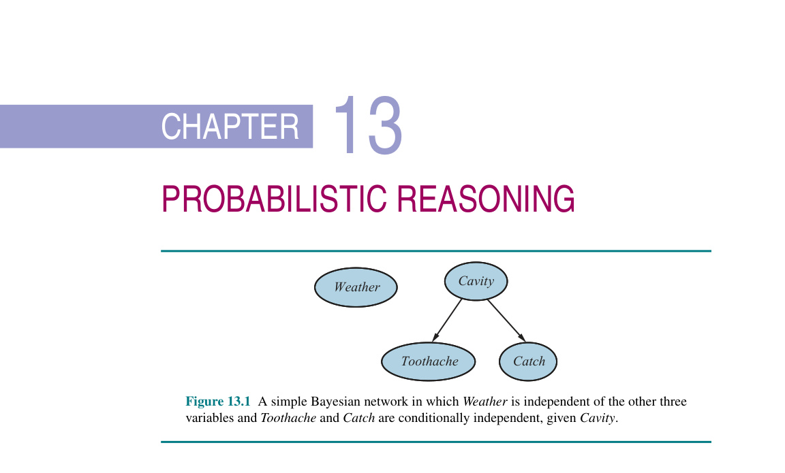
Hình 13.1
mermaid graph TD W(("Weather")) C(("Cavity")) C --> T(("Toothache")) C --> Ca(("Catch"))Hình 13.1 Một mạng Bayes đơn giản trong đó Thời tiết (Weather) là độc lập với ba biến còn lại và Đau răng (Toothache) cùng Mắc trâm (Catch) là độc lập có điều kiện khi biết Sâu răng (Cavity).
Cấu trúc topo của mạng — tập hợp các nút và liên kết — chỉ định các mối quan hệ độc lập có điều kiện đúng trong miền, theo một cách sẽ được làm chính xác ở ngay sau đây. Ý nghĩa trực quan của một mũi tên thông thường là $X$ có ảnh hưởng trực tiếp lên $Y$, điều này gợi ý rằng các nguyên nhân nên là cha của các kết quả (causes should be parents of effects). Một chuyên gia trong miền thường dễ dàng quyết định những ảnh hưởng trực tiếp nào tồn tại trong miền — trên thực tế, điều đó dễ dàng hơn nhiều so với việc chỉ định chính xác các xác suất. Một khi cấu trúc topo của Bayes net được thiết lập, chúng ta chỉ cần chỉ định thông tin xác suất cục bộ cho mỗi biến, dưới dạng một phân phối có điều kiện khi biết các cha của nó. Phân phối đồng thời đầy đủ cho tất cả các biến được định nghĩa bởi cấu trúc topo và thông tin xác suất cục bộ.
Nhớ lại thế giới đơn giản được mô tả ở Chương 12, bao gồm các biến Toothache, Cavity, Catch, và Weather. Chúng ta đã lập luận rằng Weather là độc lập với các biến khác; hơn nữa, chúng ta đã lập luận rằng Toothache và Catch là độc lập có điều kiện, nếu biết Cavity. Những mối quan hệ này được biểu diễn bởi cấu trúc Bayes net thể hiện trong Hình 13.1. Về mặt hình thức, tính độc lập có điều kiện của Toothache và Catch khi biết Cavity, được biểu thị bằng sự vắng mặt của một liên kết giữa Toothache và Catch. Về mặt trực quan, mạng biểu diễn thực tế rằng Cavity là một nguyên nhân trực tiếp của Toothache và Catch, trong khi không có mối quan hệ nhân quả trực tiếp nào tồn tại giữa Toothache và Catch.
Bây giờ hãy xem xét ví dụ sau đây, phức tạp hơn một chút. Bạn có một hệ thống báo động chống trộm mới (burglar alarm) được lắp đặt ở nhà. Nó khá đáng tin cậy trong việc phát hiện các vụ trộm (burglary), nhưng đôi khi bị kích hoạt bởi các trận động đất nhỏ (earthquakes). (Ví dụ này do Judea Pearl, một cư dân của Los Angeles hay có động đất, đưa ra.) Bạn cũng có hai người hàng xóm, John và Mary, những người đã hứa sẽ gọi điện cho bạn ở nơi làm việc khi họ nghe thấy tiếng chuông báo động. John gần như luôn luôn gọi khi anh ta nghe thấy tiếng báo động, nhưng đôi khi nhầm lẫn tiếng điện thoại reo với tiếng báo động và khi đó cũng gọi. Mặt khác, Mary thích nghe nhạc khá lớn và thường bỏ lỡ hoàn toàn tiếng báo động. Với bằng chứng về việc ai đã hoặc chưa gọi, chúng ta muốn ước tính xác suất xảy ra một vụ trộm.
Một Bayes net cho miền này xuất hiện trong Hình 13.2. Cấu trúc mạng cho thấy rằng trộm cắp và động đất tác động trực tiếp đến xác suất chuông báo động kêu, nhưng việc John và Mary có gọi hay không chỉ phụ thuộc vào chuông báo động. Mạng do đó biểu diễn các giả định của chúng ta rằng họ không nhận thức được các vụ trộm một cách trực tiếp, họ không chú ý đến các trận động đất nhỏ, và họ không bàn bạc với nhau trước khi gọi.
Thông tin xác suất cục bộ đính kèm với mỗi nút trong Hình 13.2 có dạng một bảng xác suất có điều kiện (conditional probability table - CPT). (CPT chỉ có thể được sử dụng cho các biến rời rạc; các biểu diễn khác, bao gồm cả những biểu diễn phù hợp với các biến liên tục, được mô tả trong Phần 13.2.) Mỗi hàng trong một CPT chứa xác suất có điều kiện của mỗi giá trị nút đối với một trường hợp điều kiện hóa (conditioning case). Một trường hợp điều kiện hóa chỉ là một tổ hợp các giá trị có thể có đối với các nút cha — giống như một thế giới có thể thu nhỏ. Mỗi hàng phải cộng lại bằng 1, bởi vì các mục biểu diễn một tập hợp vét cạn các trường hợp cho biến đó. Đối với các biến Boolean, một khi bạn biết rằng xác suất của một giá trị $\text{true}$ là $p$, thì xác suất của $\text{false}$ phải là $1 - p$, vì vậy chúng ta thường bỏ qua số thứ hai, như trong Hình 13.2. Nhìn chung, một bảng cho một biến Boolean với $k$ nút cha Boolean chứa $2^k$ xác suất có thể chỉ định một cách độc lập. Một nút không có cha chỉ có một hàng, đại diện cho các xác suất tiên nghiệm của mỗi giá trị có thể của biến.
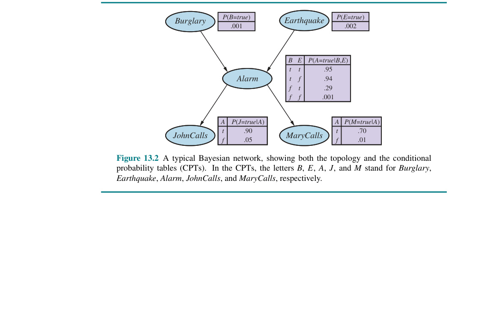
Hình 13.2 Một mạng Bayes điển hình, hiển thị cả cấu trúc topo và các bảng xác suất có điều kiện (CPT). Trong các CPT, các chữ cái B, E, A, J, và M là viết tắt của Burglary (Trộm), Earthquake (Động đất), Alarm (Báo động), JohnCalls (John gọi), và MaryCalls (Mary gọi), tương ứng.
mermaid graph TD B(("Burglary")) --> A(("Alarm")) E(("Earthquake")) --> A A --> J(("JohnCalls")) A --> M(("MaryCalls"))
Lưu ý rằng mạng không có các nút tương ứng với việc Mary hiện đang nghe nhạc lớn hoặc tiếng điện thoại reo và làm John nhầm lẫn. Những yếu tố này được tóm tắt trong sự không chắc chắn liên kết với các liên kết từ Alarm đến JohnCalls và MaryCalls. Điều này cho thấy cả sự lười biếng và sự thiếu hiểu biết đang hoạt động, như đã giải thích ở trang 404: sẽ tốn rất nhiều công sức để tìm hiểu lý do tại sao những yếu tố đó có nhiều hay ít khả năng xảy ra trong bất kỳ trường hợp cụ thể nào, và chúng ta cũng không có cách nào hợp lý để có được thông tin liên quan.
Thực tế, các xác suất này tóm tắt một tập hợp vô hạn tiềm tàng các hoàn cảnh mà báo động có thể không kêu (độ ẩm cao, cúp điện, hết pin, đứt dây, một con chuột chết mắc kẹt trong chuông, v.v.) hoặc John hay Mary có thể không gọi để báo cáo (ra ngoài ăn trưa, đi nghỉ, bị điếc tạm thời, trực thăng bay ngang qua, v.v.). Theo cách này, một tác nhân nhỏ có thể đối phó với một thế giới rất lớn, ít nhất là một cách xấp xỉ.
Cú pháp của một Bayes net bao gồm một đồ thị có hướng không có chu trình với một số thông tin xác suất cục bộ đính kèm với mỗi nút. Ngữ nghĩa (semantics) xác định cách cú pháp này tương ứng với một phân phối đồng thời trên các biến của mạng.
Giả sử rằng Bayes net chứa $n$ biến, $X_1, \dots, X_n$. Một mục chung trong phân phối đồng thời khi đó là $P(X_1 = x_1 \land \dots \land X_n = x_n)$, hoặc viết tắt là $P(x_1, \dots, x_n)$. Ngữ nghĩa của Bayes nets định nghĩa từng mục trong phân phối đồng thời như sau:
$P(x_1, \dots, x_n) = \prod_{i=1}^n \theta(x_i | \text{parents}(X_i))$, (13.1)
trong đó $\text{parents}(X_i)$ biểu thị các giá trị của $\text{Parents}(X_i)$ xuất hiện trong $x_1, \dots, x_n$. Do đó, mỗi mục trong phân phối đồng thời được biểu diễn bởi tích của các phần tử thích hợp trong các phân phối có điều kiện cục bộ trong Bayes net.
Để minh họa điều này, chúng ta có thể tính xác suất chuông báo động đã kêu, nhưng không có vụ trộm cũng như trận động đất nào xảy ra, và cả John và Mary đều gọi. Chúng ta chỉ việc nhân các mục liên quan từ các phân phối có điều kiện cục bộ (viết tắt tên các biến):
$P(j, m, a, \neg b, \neg e) = P(j|a)P(m|a)P(a|\neg b \land \neg e)P(\neg b)P(\neg e)$ $= 0.90 \times 0.70 \times 0.001 \times 0.999 \times 0.998 = 0.000628$.
Phần 12.3 đã giải thích rằng phân phối đồng thời đầy đủ có thể được sử dụng để trả lời bất kỳ truy vấn nào về miền. Nếu một Bayes net là một biểu diễn của phân phối đồng thời, thì nó cũng có thể được sử dụng để trả lời bất kỳ truy vấn nào, bằng cách cộng tất cả các giá trị xác suất đồng thời có liên quan, mỗi giá trị được tính bằng cách nhân các xác suất từ các phân phối có điều kiện cục bộ. Phần 13.3 giải thích điều này chi tiết hơn, nhưng cũng mô tả các phương pháp hiệu quả hơn nhiều.
Cho đến nay, chúng ta đã lướt qua một điểm quan trọng: ý nghĩa của các con số đi vào các phân phối có điều kiện cục bộ $\theta(x_i | \text{parents}(X_i))$ là gì? Hóa ra là từ Công thức (13.1), chúng ta có thể chứng minh rằng các tham số $\theta(x_i | \text{parents}(X_i))$ chính xác là các xác suất có điều kiện $P(x_i | \text{parents}(X_i))$ được ngụ ý bởi phân phối đồng thời. Hãy nhớ rằng các xác suất có điều kiện có thể được tính từ phân phối đồng thời như sau:
$P(x_i | \text{parents}(X_i)) \equiv \frac{P(x_i, \text{parents}(X_i))}{P(\text{parents}(X_i))}$ $= \frac{\sum_{\textbf{y}} P(x_i, \text{parents}(X_i), \textbf{y})}{\sum_{x'_i, \textbf{y}} P(x'_i, \text{parents}(X_i), \textbf{y})}$
trong đó $\textbf{y}$ đại diện cho các giá trị của tất cả các biến khác ngoài $X_i$ và các cha của nó. Từ dòng cuối cùng này, người ta có thể chứng minh rằng $P(x_i | \text{parents}(X_i)) = \theta(x_i | \text{parents}(X_i))$ (Bài tập 13.CPTE). Do đó, chúng ta có thể viết lại Công thức (13.1) thành
$P(x_1, \dots, x_n) = \prod_{i=1}^n P(x_i | \text{parents}(X_i))$. (13.2)
Điều này có nghĩa là khi người ta ước lượng các giá trị cho các phân phối có điều kiện cục bộ, chúng cần phải là các xác suất có điều kiện thực tế cho biến đó khi biết các cha của nó. Ví dụ, khi chúng ta chỉ định $\theta(\text{JohnCalls}=\text{true} | \text{Alarm}=\text{true}) = 0.90$, nó có nghĩa là khoảng 90% số lần chuông báo động kêu, John sẽ gọi. Thực tế rằng mỗi tham số của mạng có một ý nghĩa chính xác xét theo chỉ một nhóm nhỏ các biến là điều đặc biệt quan trọng đối với tính mạnh mẽ và sự dễ dàng chỉ định của các mô hình.
Công thức (13.2) định nghĩa ý nghĩa của một Bayes net cho trước. Bước tiếp theo là giải thích cách xây dựng một mạng Bayes sao cho phân phối đồng thời kết quả là một biểu diễn tốt cho một miền cho trước. Bây giờ chúng tôi sẽ chỉ ra rằng Công thức (13.2) ngụ ý những mối quan hệ độc lập có điều kiện nhất định có thể được sử dụng để hướng dẫn kỹ sư tri thức (knowledge engineer) trong việc xây dựng cấu trúc topo của mạng. Đầu tiên, chúng ta viết lại các mục trong phân phối đồng thời theo dạng xác suất có điều kiện, sử dụng quy tắc nhân (xem trang 408):
$P(x_1, \dots, x_n) = P(x_n | x_{n-1}, \dots, x_1)P(x_{n-1}, \dots, x_1)$.
Sau đó chúng ta lặp lại quá trình này, rút gọn mỗi xác suất đồng thời thành một xác suất có điều kiện và một xác suất đồng thời trên một tập biến nhỏ hơn. Cuối cùng, chúng ta kết thúc với một phép nhân lớn:
$P(x_1, \dots, x_n) = P(x_n | x_{n-1}, \dots, x_1)P(x_{n-1} | x_{n-2}, \dots, x_1) \dots P(x_2 | x_1)P(x_1)$ $= \prod_{i=1}^n P(x_i | x_{i-1}, \dots, x_1)$.
Đồng nhất thức này được gọi là quy tắc chuỗi (chain rule). Nó đúng với bất kỳ tập hợp các biến ngẫu nhiên nào. So sánh nó với Công thức (13.2), chúng ta thấy rằng việc chỉ định phân phối đồng thời tương đương với nhận định tổng quát rằng, đối với mọi biến $X_i$ trong mạng,
P$(X_i | X_{i-1}, \dots, X_1) = \textbf{P}(X_i | \text{Parents}(X_i))$, (13.3)
miễn là $\text{Parents}(X_i) \subseteq {X_{i-1}, \dots, X_1}$. Điều kiện cuối cùng này được thỏa mãn bằng cách đánh số các nút theo thứ tự topo (topological order) — tức là, theo bất kỳ thứ tự nào nhất quán với cấu trúc đồ thị có hướng. Ví dụ, các nút trong Hình 13.2 có thể được sắp xếp theo thứ tự $B, E, A, J, M$; $E, B, A, M, J$; v.v.
Những gì Công thức (13.3) nói là mạng Bayes là một biểu diễn chính xác của miền chỉ khi mỗi nút là độc lập có điều kiện với các nút tiền bối (predecessors) khác của nó trong thứ tự sắp xếp nút, khi đã biết các cha của nó. Chúng ta có thể thỏa mãn điều kiện này bằng phương pháp luận sau:
Về mặt trực quan, các cha của nút $X_i$ phải chứa tất cả các nút trong $X_1, \dots, X_{i-1}$ có ảnh hưởng trực tiếp đến $X_i$. Ví dụ, giả sử chúng ta đã hoàn thành mạng trong Hình 13.2 ngoại trừ việc chọn các nút cha cho MaryCalls. MaryCalls chắc chắn bị ảnh hưởng bởi việc có một Burglary (Trộm) hay một Earthquake (Động đất) hay không, nhưng không bị ảnh hưởng trực tiếp. Về mặt trực quan, kiến thức của chúng ta về miền cho chúng ta biết rằng những sự kiện này chỉ ảnh hưởng đến hành vi gọi điện của Mary thông qua tác động của chúng đối với chuông báo động. Ngoài ra, nếu đã biết trạng thái của chuông báo động, việc John gọi điện không có ảnh hưởng gì đến việc Mary gọi điện. Về mặt hình thức, chúng ta tin rằng phát biểu độc lập có điều kiện sau đây là đúng:
P$(\text{MaryCalls} | \text{JohnCalls}, \text{Alarm}, \text{Earthquake}, \text{Burglary}) = \textbf{P}(\text{MaryCalls} | \text{Alarm})$.
Do đó, Alarm sẽ là nút cha duy nhất cho MaryCalls.
Bởi vì mỗi nút chỉ được kết nối với các nút trước đó, phương pháp xây dựng này đảm bảo rằng mạng là không có chu trình. Một thuộc tính quan trọng khác của Bayes nets là chúng không chứa các giá trị xác suất thừa thãi. Nếu không có sự dư thừa, thì sẽ không có cơ hội cho sự không nhất quán: kỹ sư tri thức hoặc chuyên gia miền không thể nào tạo ra một mạng Bayes vi phạm các tiên đề của xác suất.
Cùng với việc là một biểu diễn đầy đủ và không dư thừa của miền, một Bayes net thường có thể nhỏ gọn hơn nhiều so với phân phối đồng thời đầy đủ. Thuộc tính này là thứ làm cho việc xử lý các miền có nhiều biến trở nên khả thi. Tính nhỏ gọn của các mạng Bayes là một ví dụ về một thuộc tính chung của các hệ thống có cấu trúc cục bộ (locally structured) (còn được gọi là thưa thớt (sparse)). Trong một hệ thống có cấu trúc cục bộ, mỗi thành phần con tương tác trực tiếp với chỉ một số lượng giới hạn các thành phần khác, bất kể tổng số lượng thành phần là bao nhiêu. Cấu trúc cục bộ thường liên quan đến sự tăng trưởng tuyến tính thay vì hàm mũ về độ phức tạp.
Trong trường hợp của Bayes nets, việc giả định rằng trong hầu hết các miền mỗi biến ngẫu nhiên bị ảnh hưởng trực tiếp bởi tối đa $k$ biến khác là điều hợp lý, với một hằng số $k$ nào đó. Để đơn giản, nếu chúng ta giả định có $n$ biến Boolean, thì lượng thông tin cần thiết để chỉ định mỗi bảng xác suất có điều kiện sẽ là tối đa $2^k$ con số, và toàn bộ mạng có thể được chỉ định bằng $2^k \cdot n$ con số. Ngược lại, phân phối đồng thời chứa $2^n$ con số. Để cụ thể hóa điều này, giả sử chúng ta có $n=30$ nút, mỗi nút có năm nút cha ($k=5$). Khi đó mạng Bayes yêu cầu 960 con số, nhưng phân phối đồng thời đầy đủ yêu cầu hơn một tỷ con số.
Việc chỉ định các bảng xác suất có điều kiện cho một mạng kết nối đầy đủ (fully connected network), trong đó mỗi biến có tất cả các nút tiền nhiệm làm cha của nó, đòi hỏi một lượng thông tin tương đương với việc chỉ định phân phối đồng thời dưới dạng bảng. Vì lý do này, chúng ta thường bỏ qua các liên kết ngay cả khi có tồn tại một sự phụ thuộc nhẹ, bởi vì sự gia tăng nhỏ về độ chính xác không đáng để đổi lấy sự phức tạp gia tăng thêm trong mạng. Ví dụ, người ta có thể phản đối mạng chống trộm của chúng ta với lý do là nếu có một trận động đất lớn, thì John và Mary sẽ không gọi điện ngay cả khi họ nghe thấy tiếng báo động, bởi vì họ cho rằng động đất là nguyên nhân. Việc có thêm liên kết từ Earthquake đến JohnCalls và MaryCalls (và qua đó mở rộng các bảng) hay không phụ thuộc vào tầm quan trọng của việc có được các xác suất chính xác hơn so với chi phí của việc chỉ định thông tin bổ sung đó.
Ngay cả trong một miền có cấu trúc cục bộ, chúng ta sẽ chỉ có được một Bayes net nhỏ gọn nếu chúng ta chọn thứ tự nút tốt. Điều gì sẽ xảy ra nếu chúng ta tình cờ chọn sai thứ tự? Hãy xem xét lại ví dụ về trộm cắp. Giả sử chúng ta quyết định thêm các nút theo thứ tự MaryCalls, JohnCalls, Alarm, Burglary, Earthquake. Khi đó chúng ta nhận được một mạng phức tạp hơn phần nào như trong Hình 13.3(a). Quá trình diễn ra như sau: * Thêm MaryCalls: Không có cha. * Thêm JohnCalls: Nếu Mary gọi, điều đó có thể có nghĩa là chuông báo động đã kêu, điều này làm cho khả năng John gọi trở nên cao hơn. Do đó, JohnCalls cần MaryCalls làm cha. * Thêm Alarm: Rõ ràng, nếu cả hai đều gọi, thì khả năng chuông báo động đã kêu sẽ cao hơn so với việc chỉ có một người hoặc không ai gọi, do đó chúng ta cần cả MaryCalls và JohnCalls làm cha. * Thêm Burglary: Nếu chúng ta biết trạng thái của báo động, thì cuộc gọi từ John hoặc Mary có thể cung cấp cho chúng ta thông tin về việc điện thoại của chúng ta đang reo hoặc về âm nhạc của Mary, chứ không phải về vụ trộm: P$(\text{Burglary} | \text{Alarm}, \text{JohnCalls}, \text{MaryCalls}) = \textbf{P}(\text{Burglary} | \text{Alarm})$. Do đó chúng ta chỉ cần Alarm làm cha. * Thêm Earthquake: Nếu báo động bật, thì khả năng là đã có một trận động đất cao hơn. (Chuông báo động ở một mức độ nào đó là một máy phát hiện động đất.) Nhưng nếu chúng ta biết rằng đã có một vụ trộm, thì điều đó giải thích cho việc báo động kêu, và xác suất có động đất sẽ chỉ nhỉnh hơn bình thường một chút. Do đó, chúng ta cần cả Alarm và Burglary làm cha.
Mạng kết quả có nhiều hơn mạng ban đầu trong Hình 13.2 hai liên kết và đòi hỏi 13 xác suất có điều kiện thay vì 10. Tệ hơn nữa, một số liên kết đại diện cho những mối quan hệ mờ nhạt (tenuous relationships) đòi hỏi những đánh giá xác suất khó khăn và không tự nhiên, chẳng hạn như đánh giá xác suất có Earthquake khi biết Burglary và Alarm. Hiện tượng này khá phổ biến và liên quan đến sự phân biệt giữa mô hình nhân quả (causal) và mô hình chẩn đoán (diagnostic) đã được giới thiệu ở Phần 12.5.1 (xem thêm Bài tập 13.WUMD). Nếu chúng ta bám vào một mô hình nhân quả, cuối cùng chúng ta sẽ phải chỉ định ít con số hơn, và các con số đó thường sẽ dễ dàng nghĩ ra hơn. Ví dụ, trong lĩnh vực y tế, Tversky và Kahneman (1982) đã chỉ ra rằng các bác sĩ chuyên khoa có kinh nghiệm ưu tiên đưa ra các đánh giá xác suất cho các quy tắc nhân quả hơn là cho các quy tắc chẩn đoán. Phần 13.5 khám phá ý tưởng về các mô hình nhân quả sâu sắc hơn.
Hình 13.3(b) cho thấy một thứ tự nút rất tồi: MaryCalls, JohnCalls, Earthquake, Burglary, Alarm. Mạng này đòi hỏi 31 xác suất riêng biệt phải được chỉ định — bằng đúng con số của phân phối đồng thời đầy đủ. Tuy nhiên, điều quan trọng cần nhận ra là bất kỳ mạng nào trong số ba mạng này cũng có thể biểu diễn chính xác cùng một phân phối đồng thời. Hai phiên bản trong Hình 13.3 đơn giản là thất bại trong việc biểu diễn tất cả các mối quan hệ độc lập có điều kiện, do đó cuối cùng lại phải chỉ định quá nhiều con số không cần thiết.
Từ ngữ nghĩa của Bayes nets được định nghĩa trong Công thức (13.2), chúng ta có thể rút ra một số tính chất độc lập có điều kiện. Chúng ta đã thấy tính chất rằng một biến là độc lập có điều kiện với các nút tiền bối (predecessors) khác của nó, nếu biết các cha của nó. Người ta cũng có thể chứng minh tính chất "không phải hậu duệ" (non-descendants) tổng quát hơn:
Một biến là độc lập có điều kiện với các nút không phải hậu duệ (non-descendants) của nó, nếu biết các cha của nó.
Ví dụ, trong Hình 13.2, biến JohnCalls là độc lập với Burglary, Earthquake, và MaryCalls khi biết giá trị của Alarm. Định nghĩa này được minh họa ở Hình 13.4(a).
Hóa ra tính chất không phải hậu duệ kết hợp với việc diễn giải các tham số mạng $\theta(X_i | \text{Parents}(X_i))$ như là các xác suất có điều kiện P$(X_i | \text{Parents}(X_i))$ là đủ để tái cấu trúc lại phân phối đồng thời đầy đủ được đưa ra trong Công thức (13.2). Nói cách khác, người ta có thể xem ngữ nghĩa của Bayes nets theo một cách khác: thay vì định nghĩa phân phối đồng thời đầy đủ là tích của các phân phối có điều kiện, mạng định nghĩa một tập hợp các tính chất độc lập có điều kiện. Phân phối đồng thời đầy đủ có thể được suy ra từ các tính chất đó.
Một thuộc tính độc lập quan trọng khác được ngụ ý bởi thuộc tính không phải hậu duệ:
Một biến là độc lập có điều kiện với tất cả các nút khác trong mạng, nếu biết các cha của nó, các con của nó, và các cha của con nó — tức là, nếu biết Markov blanket của nó.
(Bài tập 13.MARB yêu cầu bạn chứng minh điều này.) Ví dụ, biến Burglary độc lập với JohnCalls và MaryCalls, nếu biết Alarm và Earthquake. Thuộc tính này được minh họa trong Hình 13.4(b). Thuộc tính Markov blanket làm cho các thuật toán suy luận sử dụng các quá trình lấy mẫu ngẫu nhiên (stochastic sampling) hoàn toàn cục bộ và phân tán trở nên khả thi, như được giải thích trong Phần 13.4.2.
Câu hỏi chung nhất về tính độc lập có điều kiện mà người ta có thể hỏi trong một Bayes net là liệu một tập hợp các nút X có độc lập có điều kiện với một tập hợp Y khác hay không, nếu biết một tập hợp thứ ba Z. Điều này có thể được xác định một cách hiệu quả bằng cách kiểm tra Bayes net để xem liệu Z có d-tách biệt (d-separates) X và Y hay không. Quá trình hoạt động như sau: 1. Xét đồ thị con tổ tiên (ancestral subgraph) chỉ bao gồm X, Y, Z, và các tổ tiên của chúng. 2. Thêm các liên kết giữa bất kỳ cặp nút nào chưa được liên kết nhưng chia sẻ chung một nút con; giờ thì chúng ta có thứ được gọi là đồ thị đạo đức (moral graph). 3. Thay thế tất cả các liên kết có hướng bằng các liên kết không có hướng. 4. Nếu Z chặn tất cả các đường đi giữa X và Y trong đồ thị kết quả, thì Z d-tách biệt X và Y. Trong trường hợp đó, X độc lập có điều kiện với Y, nếu biết Z. Nếu không, mạng Bayes ban đầu không yêu cầu phải có tính độc lập có điều kiện.
Nói tóm lại, d-tách biệt có nghĩa là sự tách biệt trong đồ thị con tổ tiên, đã được đạo đức hóa (moralized) và vô hướng hóa. Áp dụng định nghĩa này cho mạng trộm cắp ở Hình 13.2, chúng ta có thể suy ra rằng Burglary và Earthquake độc lập với nhau khi biết một tập hợp rỗng (tức là chúng độc lập tuyệt đối); rằng chúng không nhất thiết độc lập có điều kiện nếu biết Alarm; và rằng JohnCalls và MaryCalls độc lập có điều kiện với nhau nếu biết Alarm. Cũng lưu ý rằng thuộc tính Markov blanket suy ra trực tiếp từ thuộc tính d-tách biệt, vì Markov blanket của một biến sẽ d-tách biệt nó khỏi tất cả các biến khác.
Ngay cả khi số lượng nút cha tối đa $k$ tương đối nhỏ, việc điền vào CPT cho một nút vẫn đòi hỏi đến $O(2^k)$ con số và có lẽ cần rất nhiều kinh nghiệm với tất cả các trường hợp điều kiện hóa có thể xảy ra. Trên thực tế, đây là một kịch bản xấu nhất trong đó mối quan hệ giữa cha mẹ và con cái là hoàn toàn tùy ý. Thông thường, những mối quan hệ như vậy có thể được mô tả bởi một phân phối điển hình (canonical distribution) phù hợp với một khuôn mẫu (pattern) tiêu chuẩn nào đó. Trong những trường hợp như vậy, toàn bộ bảng có thể được chỉ định chỉ bằng cách gọi tên khuôn mẫu đó và có thể cung cấp thêm một vài tham số.
Ví dụ đơn giản nhất được cung cấp bởi các nút tất định (deterministic nodes). Một nút tất định có giá trị của nó được chỉ định chính xác bởi các giá trị của các cha nó, không có sự không chắc chắn nào cả. Mối quan hệ có thể là một mối quan hệ logic: ví dụ, mối quan hệ giữa các nút cha Canadian, US, Mexican và nút con NorthAmerican đơn giản là nút con là một phép tuyển (disjunction - phép HOẶC) của các cha. Mối quan hệ cũng có thể là bằng số (numerical): ví dụ, BestPrice cho một chiếc ô tô là mức giá tối thiểu (minimum) trong số các giá từ mỗi đại lý trong khu vực; và WaterStored trong một hồ chứa vào cuối năm là tổng của lượng nước ban đầu, cộng với dòng chảy vào (inflows - sông ngòi, dòng chảy tràn, lượng mưa) và trừ đi dòng chảy ra (outflows - xả nước, bốc hơi, rò rỉ).
Nhiều hệ thống Bayes net cho phép người dùng chỉ định các hàm tất định bằng cách sử dụng ngôn ngữ lập trình đa năng; điều này giúp có thể bao gồm các yếu tố phức tạp như mô hình khí hậu toàn cầu hoặc bộ giả lập lưới điện trong một mô hình xác suất.
Một khuôn mẫu quan trọng khác thường xảy ra trong thực tế là tính độc lập đặc thù theo ngữ cảnh (context-specific independence) hay CSI. Một phân phối có điều kiện biểu hiện CSI nếu một biến độc lập có điều kiện với một số cha của nó khi biết các giá trị nhất định của các cha khác. Ví dụ, hãy giả sử rằng Thiệt hại (Damage) đối với ô tô của bạn xảy ra trong một khoảng thời gian nhất định phụ thuộc vào Độ chắc chắn (Ruggedness) của ô tô bạn và việc có một Tai nạn (Accident) xảy ra trong khoảng thời gian đó hay không. Rõ ràng, nếu Accident là $\text{false}$, thì Damage, nếu có, sẽ không phụ thuộc vào Ruggedness của ô tô bạn. (Có thể có thiệt hại do phá hoại đối với lớp sơn hoặc cửa sổ của ô tô, nhưng chúng ta sẽ giả định tất cả các xe đều chịu loại thiệt hại đó như nhau.) Chúng ta nói rằng Damage độc lập theo ngữ cảnh cụ thể với Ruggedness khi biết $\text{Accident} = \text{false}$. Các hệ thống Bayes net thường triển khai CSI bằng cách sử dụng cú pháp if-then-else để chỉ định các phân phối có điều kiện; ví dụ, người ta có thể viết:
P$(\text{Damage} | \text{Ruggedness}, \text{Accident}) = \textbf{if } (\text{Accident} = \text{false}) \textbf{ then } d_1 \textbf{ else } d_2(\text{Ruggedness})$
trong đó $d_1$ và $d_2$ đại diện cho các phân phối tùy ý. Cũng giống như với tính tất định, sự hiện diện của CSI trong một mạng có thể hỗ trợ suy luận hiệu quả. Tất cả các thuật toán suy luận chính xác được đề cập trong Phần 13.3 đều có thể được sửa đổi để tận dụng CSI nhằm tăng tốc độ tính toán.
Các mối quan hệ không chắc chắn thường có thể được đặc trưng bởi cái gọi là các mối quan hệ logic nhiễu (noisy logical relationships). Ví dụ tiêu chuẩn là mối quan hệ noisy-OR, là sự tổng quát hóa của phép HOẶC logic. Trong logic mệnh đề, chúng ta có thể nói rằng Sốt (Fever) là đúng khi và chỉ khi Cảm lạnh (Cold), Cúm (Flu), hoặc Sốt rét (Malaria) là đúng. Mô hình noisy-OR cho phép sự không chắc chắn về khả năng của mỗi cha gây ra con là đúng — mối quan hệ nhân quả giữa cha và con có thể bị ức chế (inhibited), và do đó một bệnh nhân có thể bị cảm lạnh, nhưng không có biểu hiện sốt.
Mô hình đưa ra hai giả định. Thứ nhất, nó giả định rằng tất cả các nguyên nhân có thể có đã được liệt kê. (Nếu một số bị thiếu, chúng ta luôn có thể thêm một cái gọi là nút rò rỉ (leak node) bao gồm các "nguyên nhân linh tinh".) Thứ hai, nó giả định rằng sự ức chế đối với mỗi cha là độc lập với sự ức chế đối với bất kỳ cha nào khác: ví dụ, bất cứ thứ gì ức chế Malaria gây ra sốt đều độc lập với bất cứ thứ gì ức chế Flu gây ra sốt. Dựa trên các giả định này, Fever là $\text{false}$ khi và chỉ khi tất cả các cha đang có giá trị $\text{true}$ của nó đều bị ức chế, và xác suất để điều này xảy ra là tích của các xác suất ức chế $q_j$ đối với mỗi cha. Hãy giả sử các xác suất ức chế cá nhân này là như sau:
$q_{\text{cold}} = P(\neg \text{fever} | \text{cold}, \neg \text{flu}, \neg \text{malaria}) = 0.6$, $q_{\text{flu}} = P(\neg \text{fever} | \neg \text{cold}, \text{flu}, \neg \text{malaria}) = 0.2$, $q_{\text{malaria}} = P(\neg \text{fever} | \neg \text{cold}, \neg \text{flu}, \text{malaria}) = 0.1$.
Sau đó, từ thông tin này và các giả định noisy-OR, toàn bộ CPT có thể được xây dựng. Quy tắc chung là
$P(x_i | \text{parents}(X_i)) = 1 - \prod_{{j:X_j=\text{true}}} q_j$,
trong đó phép nhân được lấy trên các nút cha được gán giá trị $\text{true}$ cho hàng đó của CPT. Hình 13.5 minh họa cách tính toán này.
Nhìn chung, các mối quan hệ logic nhiễu trong đó một biến phụ thuộc vào $k$ cha có thể được mô tả bằng cách sử dụng $O(k)$ tham số thay vì $O(2^k)$ đối với bảng xác suất có điều kiện đầy đủ. Điều này làm cho việc đánh giá và học hỏi dễ dàng hơn nhiều. Ví dụ, mạng CPCS (Pradhan và cộng sự, 1994) sử dụng các phân phối noisy-OR và noisy-MAX để mô hình hóa các mối quan hệ giữa các bệnh và triệu chứng trong nội khoa. Với 448 nút và 906 liên kết, nó chỉ yêu cầu 8,254 tham số thay vì 133,931,430 cho một mạng với các CPT đầy đủ.
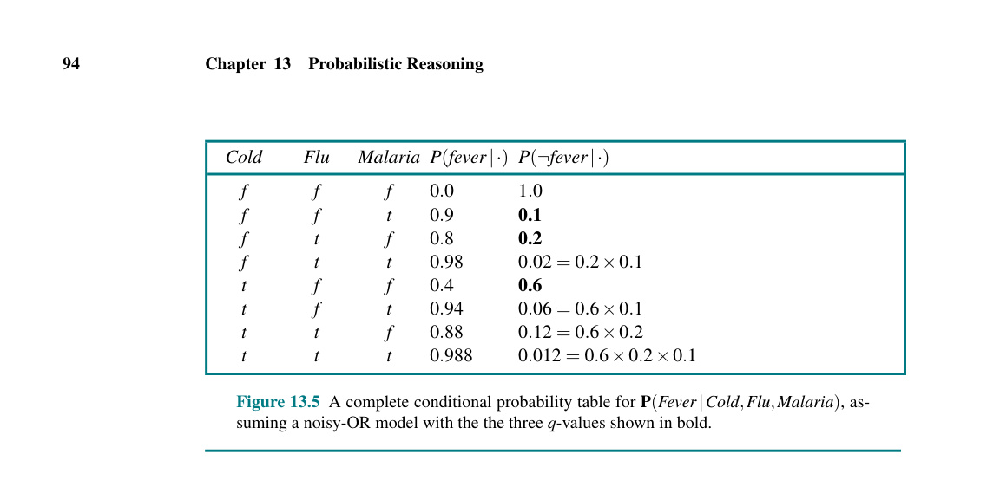
Hình 13.5 | Cold | Flu | Malaria | $P(\text{fever}|\cdot)$ | $P(\neg\text{fever}|\cdot)$ | | :--- | :--- | :--- | :--- | :--- | | $f$ | $f$ | $f$ | 0.0 | 1.0 | | $f$ | $f$ | $t$ | 0.9 | 0.1 | | $f$ | $t$ | $f$ | 0.8 | 0.2 | | $f$ | $t$ | $t$ | 0.98 | $0.02 = 0.2 \times 0.1$ | | $t$ | $f$ | $f$ | 0.4 | 0.6 | | $t$ | $f$ | $t$ | 0.94 | $0.06 = 0.6 \times 0.1$ | | $t$ | $t$ | $f$ | 0.88 | $0.12 = 0.6 \times 0.2$ | | $t$ | $t$ | $t$ | 0.988 | $0.012 = 0.6 \times 0.2 \times 0.1$ |
Hình 13.5 Bảng xác suất có điều kiện hoàn chỉnh cho P$(\text{Fever} | \text{Cold}, \text{Flu}, \text{Malaria})$, giả định một mô hình noisy-OR với ba giá trị $q$ được in đậm.
Nhiều bài toán trong thế giới thực liên quan đến các đại lượng liên tục, chẳng hạn như chiều cao, khối lượng, nhiệt độ và tiền bạc. Theo định nghĩa, các biến liên tục có số lượng vô hạn các giá trị có thể có, do đó không thể chỉ định các xác suất có điều kiện một cách rõ ràng cho từng giá trị. Một cách để xử lý các biến liên tục là bằng cách rời rạc hóa (discretization) — tức là chia các giá trị có thể có thành một tập hợp các khoảng cố định. Ví dụ, nhiệt độ có thể được chia thành ba khoảng: (< 0°C), (0°C–100°C), và (> 100°C). Khi chọn số lượng khoảng, có sự đánh đổi giữa việc mất đi độ chính xác và các CPT quá lớn dẫn đến thời gian chạy chậm.
Một cách tiếp cận khác là định nghĩa một biến liên tục bằng cách sử dụng một trong những họ hàm mật độ xác suất chuẩn (xem Phụ lục A). Ví dụ, một phân phối Gaussian (hoặc phân phối chuẩn) $\mathcal{N}(x; \mu, \sigma^2)$ được chỉ định bởi chỉ hai tham số, giá trị trung bình $\mu$ và phương sai $\sigma^2$. Thêm một giải pháp nữa — đôi khi được gọi là biểu diễn phi tham số (nonparametric) — là định nghĩa phân phối có điều kiện một cách ngầm định bằng một tập hợp các mẫu (instances), mỗi mẫu chứa các giá trị cụ thể của các biến cha và con. Chúng ta khám phá phương pháp tiếp cận này sâu hơn ở Chương 19.
Một mạng với cả biến rời rạc và biến liên tục được gọi là một mạng Bayes lai (hybrid Bayesian network). Để chỉ định một mạng lai, chúng ta phải chỉ định hai loại phân phối mới: phân phối có điều kiện cho một biến liên tục nếu biết các cha rời rạc hoặc liên tục; và phân phối có điều kiện cho một biến rời rạc nếu biết các cha liên tục. Xem xét ví dụ đơn giản trong Hình 13.6, trong đó một khách hàng mua (Buys) một ít trái cây tùy thuộc vào chi phí (Cost) của nó, mà chi phí lại phụ thuộc vào quy mô vụ thu hoạch (Harvest) và việc có chương trình trợ cấp (Subsidy) của chính phủ hay không. Biến Cost là liên tục và có cả các cha liên tục và rời rạc; biến Buys là rời rạc và có một cha liên tục.
Đối với biến Cost, chúng ta cần chỉ định $\textbf{P}(\text{Cost} | \text{Harvest}, \text{Subsidy})$. Nút cha rời rạc được xử lý bằng phép liệt kê — tức là, bằng cách chỉ định cả $\textbf{P}(\text{Cost} | \text{Harvest}, \text{subsidy})$ và $\textbf{P}(\text{Cost} | \text{Harvest}, \neg\text{subsidy})$. Để xử lý Harvest, chúng ta chỉ định cách phân phối trên chi phí $c$ phụ thuộc vào giá trị liên tục $h$ của Harvest. Nói cách khác, chúng ta chỉ định các tham số của phân phối chi phí dưới dạng một hàm của $h$. Sự lựa chọn phổ biến nhất là phân phối có điều kiện tuyến tính-Gaussian (linear-Gaussian), trong đó biến con có phân phối Gaussian với giá trị trung bình $\mu$ thay đổi tuyến tính theo giá trị của biến cha và có độ lệch chuẩn $\sigma$ là cố định. Chúng ta cần hai phân phối, một cho $\text{subsidy}$ và một cho $\neg\text{subsidy}$, với các tham số khác nhau:
$P(c|h, \text{subsidy}) = \mathcal{N}(c; a_th + b_t, \sigma_t^2) = \frac{1}{\sigma_t\sqrt{2\pi}} e^{-\frac{1}{2} \left( \frac{c - (a_th + b_t)}{\sigma_t} \right)^2}$ $P(c|h, \neg\text{subsidy}) = \mathcal{N}(c; a_fh + b_f, \sigma_f^2) = \frac{1}{\sigma_f\sqrt{2\pi}} e^{-\frac{1}{2} \left( \frac{c - (a_fh + b_f)}{\sigma_f} \right)^2}$.
Vậy trong ví dụ này, phân phối có điều kiện của Cost được chỉ định bằng cách gọi tên phân phối tuyến tính-Gaussian và cung cấp các tham số $a_t, b_t, \sigma_t, a_f, b_f,$ và $\sigma_f$. Các Hình 13.7(a) và (b) hiển thị hai mối quan hệ này. Lưu ý rằng trong mỗi trường hợp độ dốc của $c$ so với $h$ là âm, bởi vì chi phí giảm khi quy mô thu hoạch tăng. (Tất nhiên, giả định tuyến tính ngụ ý rằng chi phí sẽ trở thành số âm tại một thời điểm nào đó; mô hình tuyến tính chỉ hợp lý nếu quy mô thu hoạch bị giới hạn trong một phạm vi hẹp.) Hình 13.7(c) hiển thị phân phối $P(c|h)$, lấy trung bình qua hai giá trị có thể của Subsidy và giả định rằng mỗi giá trị có xác suất tiên nghiệm là 0.5. Điều này cho thấy ngay cả với các mô hình rất đơn giản, những phân phối khá thú vị cũng có thể được biểu diễn.
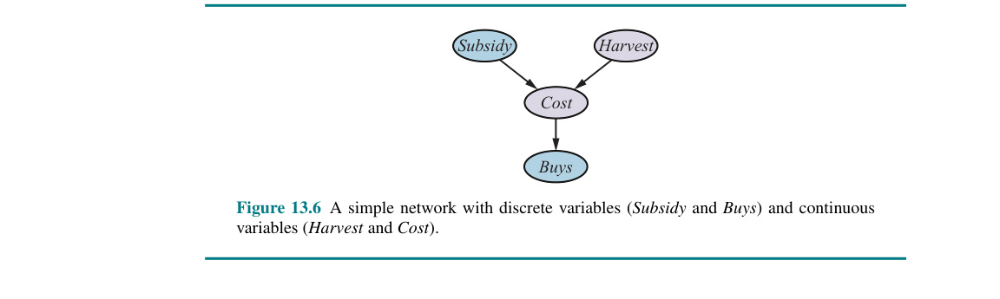
Hình 13.6
mermaid graph TD S(("Subsidy")) --> C(("Cost")) H(("Harvest")) --> C C --> B(("Buys"))Hình 13.6 Một mạng đơn giản với các biến rời rạc (Subsidy và Buys) và các biến liên tục (Harvest và Cost).
Phân phối có điều kiện tuyến tính-Gaussian có một số tính chất đặc biệt. Một mạng chỉ chứa các biến liên tục với phân phối tuyến tính-Gaussian có một phân phối đồng thời là một phân phối Gaussian đa biến (multivariate Gaussian distribution) (xem Phụ lục A) trên tất cả các biến (Bài tập 13.LGEX). Hơn nữa, phân phối hậu nghiệm khi biết bất kỳ bằng chứng nào cũng có tính chất này.$^2$ Khi các biến rời rạc được thêm vào với tư cách là các nút cha (không phải nút con) của các biến liên tục, mạng định nghĩa một phân phối Gaussian có điều kiện (conditional Gaussian - CG): nếu biết bất kỳ một phép gán nào cho các biến rời rạc, phân phối trên các biến liên tục là một Gaussian đa biến.
Bây giờ chúng ta chuyển sang các phân phối cho các biến rời rạc với các cha liên tục. Chẳng hạn, xem xét nút Buys trong Hình 13.6. Có vẻ hợp lý khi giả định rằng khách hàng sẽ mua nếu chi phí thấp và sẽ không mua nếu chi phí cao, và xác suất mua sẽ thay đổi mượt mà trong một vùng trung gian nào đó. Nói cách khác, phân phối có điều kiện giống như một hàm ngưỡng "mềm" (soft threshold). Một cách để tạo ra các ngưỡng mềm là sử dụng tích phân của phân phối chuẩn tắc (standard normal distribution):
$\Phi(x) = \int_{-\infty}^{x} \mathcal{N}(s; 0, 1)ds$.
$^2$ Hệ quả là việc suy luận trong các mạng tuyến tính-Gaussian chỉ tốn thời gian $O(n^3)$ trong trường hợp xấu nhất, bất kể cấu trúc topo của mạng. Ở Phần 13.3, chúng ta sẽ thấy rằng suy luận cho các mạng gồm các biến rời rạc là bài toán NP-khó (NP-hard).
Hàm $\Phi(x)$ là một hàm tăng theo $x$, trong khi xác suất mua lại giảm theo chi phí, vì vậy ở đây chúng ta đảo ngược hàm:
$P(\text{buys}|\text{Cost}=c) = 1 - \Phi((c - \mu)/\sigma)$,
điều này có nghĩa là ngưỡng chi phí xuất hiện xung quanh $\mu$, chiều rộng của vùng ngưỡng tỷ lệ thuận với $\sigma$, và xác suất mua giảm khi chi phí tăng. Mô hình probit này (phát âm là "pro-bit" và là viết tắt của "probability unit") được minh họa trong Hình 13.8(a). Dạng này có thể được biện minh bằng cách đề xuất rằng quá trình ra quyết định cơ bản có một ngưỡng cứng (hard threshold), nhưng vị trí chính xác của ngưỡng đó lại chịu ảnh hưởng của nhiễu Gaussian ngẫu nhiên.
Một sự thay thế cho mô hình probit là mô hình expit hoặc inverse logit. Nó sử dụng hàm logistic $1/(1 + e^{-x})$ để tạo ra một ngưỡng mềm — nó ánh xạ bất kỳ giá trị $x$ nào thành một giá trị nằm giữa 0 và 1. Một lần nữa, đối với ví dụ của chúng ta, chúng ta đảo ngược nó để tạo thành một hàm giảm; chúng ta cũng mở rộng số mũ với $4/\sqrt{2\pi}$ để làm cho độ dốc phù hợp với độ dốc của hàm probit tại giá trị trung bình:
$P(\text{buys}|\text{Cost}=c) = 1 - \frac{1}{1 + \text{exp}\left( - \frac{4}{\sqrt{2\pi}} \cdot \frac{c - \mu}{\sigma} \right)}$.
Điều này được minh họa trong Hình 13.8(b). Hai phân phối trông tương tự nhau, nhưng hàm logit thực sự có những cái "đuôi" (tails) dài hơn nhiều. Hàm probit thường phù hợp hơn với các tình huống thực tế, nhưng hàm logistic đôi khi dễ xử lý hơn về mặt toán học. Nó được sử dụng rộng rãi trong học máy. Cả hai mô hình đều có thể được khái quát hóa để xử lý nhiều nút cha liên tục bằng cách lấy kết hợp tuyến tính (linear combination) của các giá trị cha. Điều này cũng hoạt động đối với các cha rời rạc nếu các giá trị của chúng là các số nguyên; ví dụ, với $k$ cha Boolean, mỗi cha được xem như có giá trị 0 hoặc 1, thì đầu vào cho phân phối expit hoặc probit sẽ là một kết hợp tuyến tính có trọng số với $k$ tham số, tạo ra một mô hình khá giống với mô hình noisy-OR đã thảo luận trước đó.
Một công ty bảo hiểm ô tô nhận được một hồ sơ từ một cá nhân yêu cầu mua bảo hiểm cho một chiếc xe cụ thể và phải quyết định mức phí bảo hiểm hàng năm (annual premium) phù hợp để thu, dựa trên các khoản bồi thường (claims) dự kiến sẽ chi trả cho người nộp đơn này. Nhiệm vụ là xây dựng một Bayes net nắm bắt được cấu trúc nhân quả của lĩnh vực và đưa ra một phân phối chính xác, được hiệu chỉnh tốt đối với các biến đầu ra, khi biết bằng chứng từ mẫu đơn đăng ký.$^3$ Bayes net sẽ bao gồm các biến ẩn (hidden variables) không phải là biến đầu vào cũng không phải đầu ra, nhưng lại thiết yếu cho việc cấu trúc mạng sao cho nó tương đối thưa thớt với một số lượng các tham số có thể kiểm soát được. Các biến ẩn được đánh bóng màu nâu trong Hình 13.9.
Các khoản bồi thường sẽ được trả — được đánh bóng màu hoa oải hương (lavender) trong Hình 13.9 — gồm ba loại: MedicalCost cho bất kỳ thương tích nào mà người nộp đơn phải chịu; LiabilityCost cho các vụ kiện do bên thứ ba khởi kiện chống lại người nộp đơn và công ty; và PropertyCost cho thiệt hại đối với xe của một trong hai bên cũng như mất mát xe do trộm cắp. Mẫu đơn đăng ký yêu cầu các thông tin đầu vào sau đây (các nút màu xanh nhạt trong Hình 13.9): * Về người nộp đơn: Tuổi (Age); Số năm có giấy phép (YearsLicensed) — đã được bao lâu kể từ lần đầu lấy bằng lái; Hồ sơ lái xe (DrivingRecord) — một số tóm tắt, có lẽ dựa trên "điểm", của các vụ tai nạn và vi phạm giao thông gần đây; và (đối với sinh viên) một chỉ báo GoodStudent cho điểm trung bình (GPA) là 3.0 (điểm B) trên thang điểm 4. * Về chiếc xe: Hãng/Mẫu (MakeModel) và Năm sản xuất (VehicleYear); nó có Túi khí (Airbag) hay không; và một số tóm tắt về Tính năng an toàn (SafetyFeatures) chẳng hạn như phanh chống bó cứng và cảnh báo va chạm. * Về tình hình lái xe: Số dặm (Mileage) lái xe hàng năm và xe được đậu trong gara (Garaged) an toàn như thế nào, nếu có.
Bây giờ chúng ta cần nghĩ về cách sắp xếp những yếu tố này vào một cấu trúc nhân quả. Các biến ẩn then chốt là liệu một vụ Trộm (Theft) hoặc Tai nạn (Accident) có xảy ra trong khoảng thời gian tiếp theo hay không. Hiển nhiên là không thể yêu cầu người nộp đơn dự đoán những điều này; chúng phải được suy luận từ thông tin có sẵn và kinh nghiệm trước đây của công ty bảo hiểm.
Những yếu tố nhân quả nào dẫn đến việc bị Trộm (Theft)? Hãng/Mẫu xe (MakeModel) chắc chắn rất quan trọng — một số mẫu xe bị mất cắp thường xuyên hơn nhiều so với những mẫu xe khác vì có một thị trường bán lại hiệu quả cho các loại xe và phụ tùng đó; Giá trị xe (CarValue) cũng quan trọng, bởi vì một chiếc xe cũ, tồi tàn hoặc chạy nhiều dặm sẽ có giá trị bán lại thấp hơn. Hơn nữa, một chiếc xe được để trong gara (Garaged) và có thiết bị chống trộm (AntiTheft) sẽ khó bị đánh cắp hơn. Biến ẩn CarValue đến lượt nó lại phụ thuộc vào MakeModel, VehicleYear, và Mileage. CarValue cũng quy định số tiền tổn thất khi một vụ trộm (Theft) xảy ra, do đó nó là một trong những yếu tố đóng góp vào Chi phí sở hữu xe (OwnCarCost) (yếu tố còn lại là tai nạn, điều mà chúng ta sẽ đề cập tới ngay sau đây).
$^3$ Mạng hiển thị trong Hình 13.9 hiện không được sử dụng thực tế, nhưng cấu trúc của nó đã được các chuyên gia bảo hiểm xem xét. Trên thực tế, thông tin được yêu cầu trên các mẫu đơn đăng ký thay đổi tùy theo từng công ty và từng khu vực tài phán — ví dụ, một số yêu cầu Giới tính (Gender) — và mô hình này chắc chắn có thể được làm cho chi tiết và tinh vi hơn.
Thường thì trong các mô hình loại này, người ta sẽ giới thiệu một biến ẩn khác, Kinh tế - Xã hội (SocioEcon), là hạng mục kinh tế xã hội của người nộp đơn. Biến này được cho là ảnh hưởng đến một phạm vi rộng các hành vi và đặc điểm. Trong mô hình của chúng ta, không có bằng chứng trực tiếp nào dưới dạng các biến quan sát được về thu nhập và nghề nghiệp;$^4$ nhưng SocioEcon có ảnh hưởng đến MakeModel và VehicleYear; nó cũng ảnh hưởng đến việc có thêm xe (ExtraCar) và Học sinh giỏi (GoodStudent), đồng thời phụ thuộc phần nào vào Age.
Đối với bất kỳ công ty bảo hiểm nào, biến ẩn có lẽ quan trọng nhất là Mức độ ngại rủi ro (RiskAversion): những người ngại rủi ro là những khách hàng mua bảo hiểm tốt (ít rủi ro bồi thường)! Age và SocioEcon ảnh hưởng đến RiskAversion, và các "triệu chứng" của nó bao gồm việc người nộp đơn có lựa chọn đậu xe trong gara (Garaged) và trang bị các thiết bị chống trộm (AntiTheft) cũng như các tính năng an toàn (SafetyFeatures) hay không.
Trong việc dự đoán các tai nạn trong tương lai, chìa khóa là Hành vi lái xe (DrivingBehavior) trong tương lai của người nộp đơn, điều này bị ảnh hưởng bởi cả RiskAversion và Kỹ năng lái xe (DrivingSkill); biến sau đến lượt nó lại phụ thuộc vào Age và YearsLicensed. Hành vi lái xe trong quá khứ của người nộp đơn được phản ánh trong Hồ sơ lái xe (DrivingRecord), điều này cũng phụ thuộc vào RiskAversion và DrivingSkill cũng như YearsLicensed (bởi vì một người mới bắt đầu lái xe gần đây có thể chưa có đủ thời gian để tích lũy một danh sách dài các vụ tai nạn và vi phạm). Theo cách này, DrivingRecord cung cấp bằng chứng về RiskAversion và DrivingSkill, từ đó giúp dự đoán DrivingBehavior trong tương lai.
Chúng ta có thể nghĩ về DrivingBehavior như xu hướng gây tai nạn trên mỗi dặm (per-mile tendency); việc một vụ Tai nạn (Accident) có thực sự xảy ra trong một khoảng thời gian cố định hay không còn phụ thuộc vào Số dặm (Mileage) lái xe hàng năm và các tính năng an toàn (SafetyFeatures) của phương tiện. Nếu một vụ tai nạn (Accident) xảy ra, có ba loại chi phí: Chi phí y tế (MedicalCost) cho người nộp đơn phụ thuộc vào Tuổi (Age) và Đệm lót (Cushioning), điều này đến lượt nó lại phụ thuộc vào Độ cứng cáp (Ruggedness) của xe và việc xe có Túi khí (Airbag) hay không; Chi phí trách nhiệm dân sự (LiabilityCost) (chi phí y tế, đau đớn, đau khổ, tổn thất thu nhập, v.v.) đối với người lái xe kia; và Chi phí tài sản (PropertyCost) đối với người nộp đơn và người lái xe kia, cả hai đều phụ thuộc (theo những cách khác nhau) vào Ruggedness của xe và CarValue của người nộp đơn.
Chúng ta đã minh họa kiểu lập luận được sử dụng để phát triển cấu trúc topo và các biến ẩn trong một Bayes net. Chúng ta cũng cần chỉ định các phạm vi (ranges) và các phân phối có điều kiện cho mỗi biến. Đối với các phạm vi, quyết định chính thường là nên coi biến đó là rời rạc hay liên tục. Ví dụ, biến Ruggedness của phương tiện có thể là một biến liên tục có giá trị từ 0 đến 1, hoặc một biến rời rạc với phạm vi giá trị là ${\text{TinCan}, \text{Normal}, \text{Tank}}$ (Hộp sắt, Bình thường, Xe tăng).
$^4$ Một số công ty bảo hiểm cũng lấy được lịch sử tín dụng của người nộp đơn để giúp đánh giá rủi ro; điều này cung cấp nhiều thông tin hơn đáng kể về hạng mục kinh tế xã hội. Bất cứ khi nào sử dụng các biến ẩn kiểu này, người ta phải cẩn thận để chúng không vô tình trở thành yếu tố thay thế cho các biến như chủng tộc, vốn không được phép sử dụng trong các quyết định bảo hiểm. Các kỹ thuật để tránh những định kiến loại này được mô tả trong Chương 19.
Các biến liên tục mang lại độ chính xác cao hơn, nhưng chúng làm cho việc suy luận chính xác trở nên bất khả thi ngoại trừ trong một vài trường hợp đặc biệt. Một biến rời rạc với nhiều giá trị có thể có cũng có thể làm cho việc điền vào các bảng xác suất có điều kiện tương ứng lớn trở nên tẻ nhạt và làm cho suy luận chính xác trở nên tốn kém hơn, trừ khi giá trị của biến luôn được quan sát thấy. Ví dụ, MakeModel trong một hệ thống thực tế sẽ có hàng ngàn giá trị có thể có, và điều này khiến nút con của nó là CarValue có một CPT khổng lồ mà sẽ phải được điền từ các cơ sở dữ liệu của ngành công nghiệp; nhưng, vì MakeModel luôn được quan sát thấy, điều này không góp phần làm tăng độ phức tạp của suy luận: trên thực tế, các giá trị quan sát được cho ba biến cha sẽ chọn ra đúng một hàng có liên quan của CPT cho CarValue.
Các phân phối có điều kiện trong mô hình được cung cấp trong kho mã (code repository) đi kèm sách; chúng tôi cung cấp một phiên bản chỉ có các biến rời rạc, mà đối với nó chúng ta có thể thực hiện suy luận chính xác. Trong thực tế, nhiều biến sẽ là liên tục và các phân phối có điều kiện sẽ được học từ dữ liệu lịch sử về những người nộp đơn và các yêu cầu bồi thường bảo hiểm của họ. Chúng ta sẽ xem cách học các mô hình Bayes net từ dữ liệu trong Chương 21.
Tất nhiên, câu hỏi cuối cùng là làm thế nào để thực hiện suy luận trong mạng nhằm đưa ra các dự đoán. Giờ chúng ta chuyển sang câu hỏi này. Đối với mỗi phương pháp suy luận mà chúng tôi mô tả, chúng tôi sẽ đánh giá phương pháp đó trên mạng bảo hiểm để đo lường các yêu cầu về không gian và thời gian của phương pháp.
Nhiệm vụ cơ bản cho bất kỳ hệ thống suy luận xác suất nào là tính toán phân phối xác suất hậu nghiệm (posterior probability distribution) cho một tập hợp các biến truy vấn (query variables), khi biết một số sự kiện (event) quan sát được — thường là một phép gán các giá trị cho một tập hợp các biến bằng chứng (evidence variables).$^5$ Để đơn giản hóa việc trình bày, chúng tôi sẽ chỉ xem xét một biến truy vấn tại một thời điểm; các thuật toán có thể dễ dàng được mở rộng cho các truy vấn với nhiều biến. (Ví dụ, chúng ta có thể giải quyết truy vấn P$(U, V | \textbf{e})$ bằng cách nhân P$(V | \textbf{e})$ và P$(U | V, \textbf{e})$.) Chúng tôi sẽ sử dụng ký hiệu từ Chương 12: $X$ biểu thị biến truy vấn; $\textbf{E}$ biểu thị tập hợp các biến bằng chứng $E_1, \dots, E_m$, và $\textbf{e}$ là một sự kiện cụ thể quan sát được; $\textbf{Y}$ biểu thị các biến ẩn (không phải bằng chứng, không phải truy vấn) $Y_1, \dots, Y_l$. Do đó, tập hợp đầy đủ của các biến là ${X} \cup \textbf{E} \cup \textbf{Y}$. Một truy vấn điển hình yêu cầu phân phối xác suất hậu nghiệm P$(X | \textbf{e})$.
Trong mạng trộm cắp, chúng ta có thể quan sát thấy sự kiện mà trong đó $\text{JohnCalls} = \text{true}$ và $\text{MaryCalls} = \text{true}$. Sau đó chúng ta có thể hỏi, ví dụ, xác suất mà một vụ trộm đã xảy ra:
P$(\text{Burglary} | \text{JohnCalls} = \text{true}, \text{MaryCalls} = \text{true}) = \langle 0.284, 0.716 \rangle$.
Trong phần này, chúng tôi thảo luận về các thuật toán chính xác để tính toán xác suất hậu nghiệm cũng như độ phức tạp của nhiệm vụ này. Hóa ra trường hợp tổng quát là khó giải quyết (intractable), do đó Phần 13.4 sẽ đề cập đến các phương pháp suy luận xấp xỉ (approximate inference).
Chương 12 đã giải thích rằng bất kỳ xác suất có điều kiện nào cũng có thể được tính toán bằng cách cộng các số hạng từ phân phối đồng thời đầy đủ. Cụ thể hơn, một truy vấn P$(X | \textbf{e})$ có thể được trả lời bằng cách sử dụng Công thức (12.9), mà chúng tôi lặp lại ở đây để tiện theo dõi:
P$(X | \textbf{e}) = \alpha \textbf{P}(X, \textbf{e}) = \alpha \sum_{\textbf{y}} \textbf{P}(X, \textbf{e}, \textbf{y})$.
Bây giờ, một Bayes net đưa ra một biểu diễn hoàn chỉnh của phân phối đồng thời đầy đủ. Cụ thể hơn, Công thức (13.2) ở trang 433 chỉ ra rằng các số hạng $P(x, \textbf{e}, \textbf{y})$ trong phân phối đồng thời có thể được viết dưới dạng tích của các xác suất có điều kiện từ mạng. Do đó, một truy vấn có thể được trả lời bằng cách sử dụng một mạng Bayes bằng cách tính tổng các tích của các xác suất có điều kiện từ mạng.
Xem xét truy vấn P$(\text{Burglary} | \text{JohnCalls} = \text{true}, \text{MaryCalls} = \text{true})$. Các biến ẩn cho truy vấn này là Earthquake và Alarm. Từ Công thức (12.9), sử dụng các chữ cái đầu tiên cho các biến để rút ngắn các biểu thức, chúng ta có
P$(B | j, m) = \alpha \textbf{P}(B, j, m) = \alpha \sum_e \sum_a \textbf{P}(B, j, m, e, a)$.
Ngữ nghĩa của mạng Bayes (Công thức (13.2)) sau đó cung cấp cho chúng ta một biểu thức dưới dạng các mục trong CPT. Để đơn giản, chúng ta chỉ thực hiện điều này cho $\text{Burglary} = \text{true}$:
$P(b | j, m) = \alpha \sum_e \sum_a P(b)P(e)P(a|b, e)P(j|a)P(m|a)$. (13.4)
Để tính biểu thức này, chúng ta phải cộng bốn số hạng, mỗi số hạng được tính bằng cách nhân năm con số. Trong trường hợp xấu nhất, khi chúng ta phải tính tổng loại trừ (sum out) hầu như tất cả các biến, sẽ có $O(2^n)$ số hạng trong tổng, mỗi số hạng là tích của $O(n)$ giá trị xác suất. Do đó, một cách triển khai ngây thơ (naive implementation) sẽ có độ phức tạp là $O(n2^n)$.
Điều này có thể được giảm xuống thành $O(2^n)$ bằng cách tận dụng cấu trúc lồng nhau của tính toán. Về mặt ký hiệu, điều này có nghĩa là di chuyển các phép lấy tổng vào trong càng xa càng tốt trong các biểu thức như Công thức (13.4). Chúng ta có thể làm điều này bởi vì không phải tất cả các nhân tử (factors) trong tích của các xác suất đều phụ thuộc vào tất cả các biến. Do đó chúng ta có
$P(b | j, m) = \alpha P(b) \sum_e P(e) \sum_a P(a|b, e)P(j|a)P(m|a)$. (13.5)
$^5$ Một nhiệm vụ khác cũng được nghiên cứu rộng rãi là tìm kiếm lời giải thích khả dĩ nhất (most probable explanation - MPE) cho một số bằng chứng đã quan sát được. Nhiệm vụ này và các nhiệm vụ khác được thảo luận trong phần chú thích ở cuối chương.
Biểu thức này có thể được đánh giá bằng cách lặp qua các biến theo thứ tự, vừa nhân các mục CPT trong khi tiến hành. Đối với mỗi phép cộng, chúng ta cũng cần lặp qua các giá trị có thể có của biến đó. Cấu trúc của phép tính này được biểu diễn dưới dạng một cây trong Hình 13.10. Sử dụng các con số từ Hình 13.2, chúng ta thu được $P(b | j, m) = \alpha \times 0.00059224$. Phép tính tương ứng cho $\neg b$ mang lại $\alpha \times 0.0014919$; do đó,
P$(B | j, m) = \alpha \langle 0.00059224, 0.0014919 \rangle \approx \langle 0.284, 0.716 \rangle$.
Nghĩa là, khả năng xảy ra một vụ trộm, dựa trên việc có cuộc gọi từ cả hai người hàng xóm, là khoảng 28%.
Thuật toán ENUMERATION-ASK trong Hình 13.11 đánh giá các cây biểu thức này bằng cách sử dụng phép đệ quy theo chiều sâu, từ trái sang phải (depth-first, left-to-right recursion). Thuật toán này có cấu trúc rất giống với thuật toán quay lui (backtracking algorithm) để giải các bài toán thỏa mãn ràng buộc (CSPs) (Hình 5.5) và thuật toán DPLL cho tính thỏa mãn (Hình 7.17). Độ phức tạp không gian (space complexity) của nó chỉ tăng tuyến tính theo số lượng biến: thuật toán tính tổng trên phân phối đồng thời đầy đủ mà không cần phải xây dựng rõ ràng nó ra. Thật không may, độ phức tạp thời gian (time complexity) của nó cho một mạng với $n$ biến Boolean (không tính các biến bằng chứng) luôn luôn là $O(2^n)$ — tốt hơn so với mức $O(n2^n)$ cho cách tiếp cận đơn giản được mô tả trước đó, nhưng vẫn còn khá ảm đạm. Đối với mạng bảo hiểm trong Hình 13.9, tuy tương đối nhỏ, nhưng suy luận chính xác bằng cách sử dụng phép liệt kê đòi hỏi khoảng 227 triệu phép toán số học cho một truy vấn điển hình về các biến chi phí.
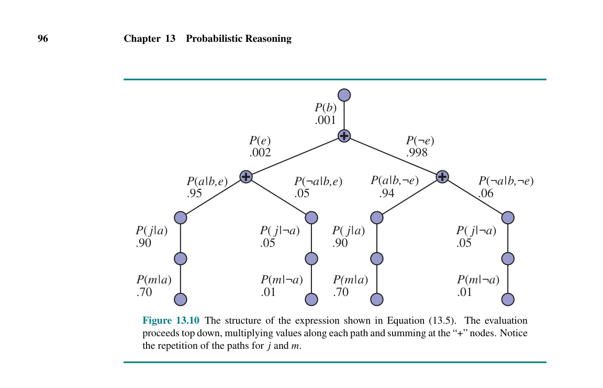
Hình 13.10 ```mermaid graph TD root((+)) root -->|P_e = .002| left1((+)) root -->|P_not_e = .998| right1((+))
left1 -->|P_a_given_b_e = .95| left2_1(( )) left1 -->|P_not_a_given_b_e = .05| left2_2(( )) right1 -->|P_a_given_b_not_e = .94| right2_1(( )) right1 -->|P_not_a_given_b_not_e = .06| right2_2(( ))``` (Hình minh họa đơn giản hóa cấu trúc cây biểu thức. Việc đánh giá tiến hành từ trên xuống dưới, nhân các giá trị dọc theo mỗi đường dẫn và lấy tổng tại các nút "+". Lưu ý sự lặp lại của các đường dẫn cho j và m.)
Tuy nhiên, nếu bạn nhìn kỹ vào cây trong Hình 13.10, bạn sẽ thấy rằng nó chứa các biểu thức con bị lặp lại (repeated subexpressions). Các tích số $P(j|a)P(m|a)$ và $P(j|\neg a)P(m|\neg a)$ được tính hai lần, một lần cho mỗi giá trị của $E$. Chìa khóa để suy luận hiệu quả trong Bayes nets là tránh những tính toán lãng phí như vậy. Phần tiếp theo mô tả một phương pháp tổng quát để thực hiện điều này.
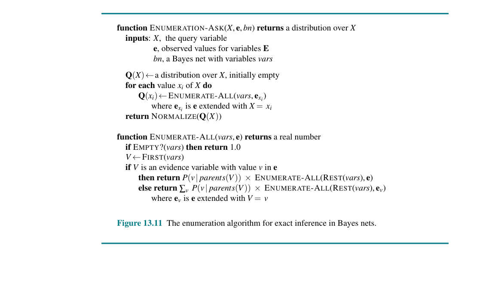
Hình 13.11 function ENUMERATION-ASK($X$, $\textbf{e}$, $bn$) returns một phân phối trên $X$ inputs: $X$, biến truy vấn $\textbf{e}$, các giá trị đã quan sát được cho các biến $\textbf{E}$ $bn$, một Bayes net với các biến vars
$\textbf{Q}(X) \leftarrow$ một phân phối trên $X$, ban đầu rỗng for each giá trị $x_i$ của $X$ do $\textbf{Q}(x_i) \leftarrow$ ENUMERATE-ALL($vars$, $\textbf{e}{x_i}$) trong đó $\textbf{e}{x_i}$ là $\textbf{e}$ được mở rộng với $X = x_i$ return NORMALIZE($\textbf{Q}(X)$)
function ENUMERATE-ALL($vars$, $\textbf{e}$) returns một số thực if EMPTY?($vars$) then return 1.0 $V \leftarrow$ FIRST($vars$) if $V$ là một biến bằng chứng có giá trị $v$ trong $\textbf{e}$ then return $P(v | \text{parents}(V)) \times$ ENUMERATE-ALL(REST($vars$), $\textbf{e}$) else return $\sum_v P(v | \text{parents}(V)) \times$ ENUMERATE-ALL(REST($vars$), $\textbf{e}_v$) trong đó $\textbf{e}_v$ là $\textbf{e}$ được mở rộng với $V = v$
Hình 13.11 Thuật toán liệt kê cho suy luận chính xác trong Bayes nets.
Thuật toán liệt kê có thể được cải thiện đáng kể bằng cách loại bỏ các tính toán lặp lại theo kiểu được minh họa trong Hình 13.10. Ý tưởng rất đơn giản: thực hiện phép tính một lần và lưu lại kết quả để sử dụng sau. Đây là một hình thức quy hoạch động (dynamic programming). Có một vài phiên bản của phương pháp này; chúng tôi trình bày thuật toán loại bỏ biến (variable elimination), đây là thuật toán đơn giản nhất. Loại bỏ biến hoạt động bằng cách đánh giá các biểu thức như Công thức (13.5) theo thứ tự từ phải sang trái (tức là từ dưới lên trong Hình 13.10). Các kết quả trung gian được lưu trữ, và việc lấy tổng trên mỗi biến chỉ được thực hiện cho các phần của biểu thức phụ thuộc vào biến đó.
Hãy minh họa quá trình này cho mạng trộm cắp. Chúng ta đánh giá biểu thức
P$(B | j, m) = \alpha \underbrace{\textbf{P}(B)}{\textbf{f}_1(B)} \sum_e \underbrace{P(e)}{\textbf{f}2(E)} \sum_a \underbrace{\textbf{P}(a|B, e)}{\textbf{f}3(A, B, E)} \underbrace{P(j|a)}{\textbf{f}4(A)} \underbrace{P(m|a)}{\textbf{f}_5(A)}$.
Lưu ý rằng chúng ta đã chú thích từng phần của biểu thức bằng tên của nhân tử (factor) tương ứng; mỗi nhân tử là một ma trận được lập chỉ mục bởi các giá trị của các biến đối số của nó. Ví dụ, các nhân tử $\textbf{f}_4(A)$ và $\textbf{f}_5(A)$ tương ứng với $P(j|a)$ và $P(m|a)$ chỉ phụ thuộc vào $A$ vì $J$ và $M$ đã được cố định bởi truy vấn. Do đó, chúng là các vectơ hai phần tử:
$\textbf{f}_4(A) = \begin{pmatrix} P(j|a) \ P(j|\neg a) \end{pmatrix} = \begin{pmatrix} 0.90 \ 0.05 \end{pmatrix}$ và $\textbf{f}_5(A) = \begin{pmatrix} P(m|a) \ P(m|\neg a) \end{pmatrix} = \begin{pmatrix} 0.70 \ 0.01 \end{pmatrix}$.
$\textbf{f}_3(A, B, E)$ sẽ là một ma trận $2 \times 2 \times 2$, rất khó để hiển thị trên trang in. (Phần tử "đầu tiên" được cho bởi $P(a|b, e) = 0.95$ và phần tử "cuối cùng" bởi $P(\neg a|\neg b, \neg e) = 0.999$.) Xét theo các nhân tử, biểu thức truy vấn được viết là
P$(B | j, m) = \alpha \textbf{f}_1(B) \times \sum_e \textbf{f}_2(E) \times \sum_a \textbf{f}_3(A, B, E) \times \textbf{f}_4(A) \times \textbf{f}_5(A)$.
Ở đây, toán tử "$\times$" không phải là phép nhân ma trận thông thường mà là phép toán tích từng điểm (pointwise product), sẽ được mô tả ngay sau đây.
Quá trình đánh giá tính tổng để loại bỏ dần các biến (từ phải sang trái) khỏi các tích từng điểm của các nhân tử để tạo ra các nhân tử mới, cuối cùng mang lại một nhân tử cấu thành đáp án — tức là phân phối hậu nghiệm trên biến truy vấn. Các bước như sau: * Đầu tiên, chúng ta loại (lấy tổng) $A$ ra khỏi tích của $\textbf{f}_3, \textbf{f}_4$, và $\textbf{f}_5$. Điều này cho chúng ta một nhân tử $2 \times 2$ mới là $\textbf{f}_6(B, E)$ có các chỉ số chạy trên $B$ và $E$: $\textbf{f}_6(B, E) = \sum_a \textbf{f}_3(A, B, E) \times \textbf{f}_4(A) \times \textbf{f}_5(A)$ $= (\textbf{f}_3(a, B, E) \times \textbf{f}_4(a) \times \textbf{f}_5(a)) + (\textbf{f}_3(\neg a, B, E) \times \textbf{f}_4(\neg a) \times \textbf{f}_5(\neg a))$. Bây giờ chúng ta còn lại biểu thức P$(B | j, m) = \alpha \textbf{f}_1(B) \times \sum_e \textbf{f}_2(E) \times \textbf{f}_6(B, E)$. * Tiếp theo, chúng ta loại $E$ ra khỏi tích của $\textbf{f}_2$ và $\textbf{f}_6$: $\textbf{f}_7(B) = \sum_e \textbf{f}_2(E) \times \textbf{f}_6(B, E)$ $= \textbf{f}_2(e) \times \textbf{f}_6(B, e) + \textbf{f}_2(\neg e) \times \textbf{f}_6(B, \neg e)$. Việc này để lại biểu thức P$(B | j, m) = \alpha \textbf{f}_1(B) \times \textbf{f}_7(B)$ có thể được đánh giá bằng cách lấy tích từng điểm và chuẩn hóa kết quả.
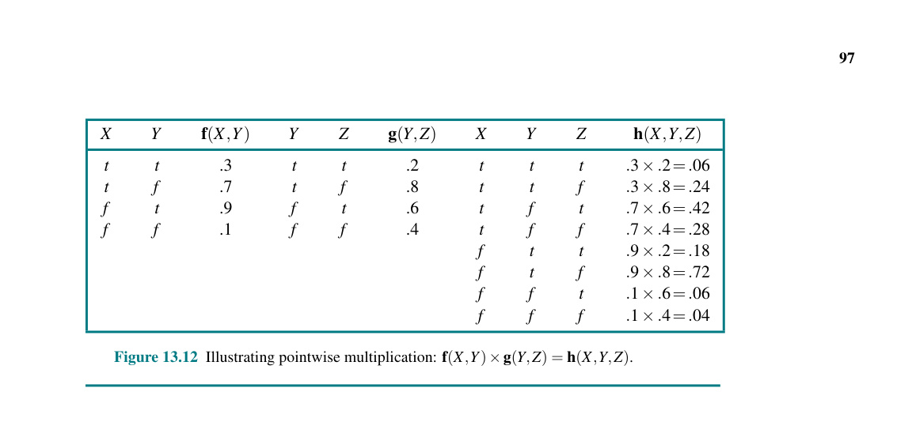
Hình 13.12 | $X$ | $Y$ | $\textbf{f}(X, Y)$ | $Y$ | $Z$ | $\textbf{g}(Y, Z)$ | $X$ | $Y$ | $Z$ | $\textbf{h}(X, Y, Z)$ | | :--- | :--- | :--- | :--- | :--- | :--- | :--- | :--- | :--- | :--- | | $t$ | $t$ | $.3$ | $t$ | $t$ | $.2$ | $t$ | $t$ | $t$ | $.3 \times .2 = .06$ | | $t$ | $f$ | $.7$ | $t$ | $f$ | $.8$ | $t$ | $t$ | $f$ | $.3 \times .8 = .24$ | | $f$ | $t$ | $.9$ | $f$ | $t$ | $.6$ | $t$ | $f$ | $t$ | $.7 \times .6 = .42$ | | $f$ | $f$ | $.1$ | $f$ | $f$ | $.4$ | $t$ | $f$ | $f$ | $.7 \times .4 = .28$ | | | | | | | | $f$ | $t$ | $t$ | $.9 \times .2 = .18$ | | | | | | | | $f$ | $t$ | $f$ | $.9 \times .8 = .72$ | | | | | | | | $f$ | $f$ | $t$ | $.1 \times .6 = .06$ | | | | | | | | $f$ | $f$ | $f$ | $.1 \times .4 = .04$ |
Hình 13.12 Minh họa phép nhân tích từng điểm: $\textbf{f}(X, Y) \times \textbf{g}(Y, Z) = \textbf{h}(X, Y, Z)$.
Xem xét chuỗi này, chúng ta thấy rằng có hai phép toán cơ bản cần thiết: tích từng điểm của một cặp các nhân tử, và lấy tổng để loại bỏ một biến ra khỏi tích của các nhân tử. Phần tiếp theo sẽ mô tả từng phép toán này.
Tích từng điểm của hai nhân tử $\textbf{f}$ và $\textbf{g}$ tạo ra một nhân tử mới $\textbf{h}$ mà các biến của nó là hợp (union) của các biến trong $\textbf{f}$ và $\textbf{g}$, và các phần tử của nó được cho bởi tích của các phần tử tương ứng trong hai nhân tử. Giả sử hai nhân tử có chung các biến $Y_1, \dots, Y_k$. Khi đó chúng ta có
$\textbf{f}(X_1 \dots X_j, Y_1 \dots Y_k) \times \textbf{g}(Y_1 \dots Y_k, Z_1 \dots Z_l) = \textbf{h}(X_1 \dots X_j, Y_1 \dots Y_k, Z_1 \dots Z_l)$.
Nếu tất cả các biến là nhị phân, thì $\textbf{f}$ và $\textbf{g}$ lần lượt có $2^{j+k}$ và $2^{k+l}$ mục, và tích từng điểm có $2^{j+k+l}$ mục. Ví dụ, cho hai nhân tử $\textbf{f}(X, Y)$ và $\textbf{g}(Y, Z)$, tích từng điểm $\textbf{f} \times \textbf{g} = \textbf{h}(X, Y, Z)$ có $2^{1+1+1} = 8$ mục, như minh họa ở Hình 13.12. Lưu ý rằng nhân tử sinh ra từ một tích từng điểm có thể chứa nhiều biến hơn bất kỳ nhân tử nào trong số các nhân tử được nhân, và kích thước của một nhân tử là một hàm mũ theo số lượng biến. Đây là nơi phát sinh cả độ phức tạp về không gian và thời gian trong thuật toán loại bỏ biến.
Lấy tổng để loại bỏ một biến ra khỏi tích của các nhân tử được thực hiện bằng cách cộng các ma trận con được tạo thành bằng cách cố định biến đó với từng giá trị của nó một cách lần lượt. Ví dụ, để loại $X$ khỏi $\textbf{h}(X, Y, Z)$, chúng ta viết
$\textbf{h}_2(Y, Z) = \sum_x \textbf{h}(X, Y, Z) = \textbf{h}(x, Y, Z) + \textbf{h}(\neg x, Y, Z)$ $= \begin{pmatrix} .06 & .24 \ .42 & .28 \end{pmatrix} + \begin{pmatrix} .18 & .72 \ .06 & .04 \end{pmatrix} = \begin{pmatrix} .24 & .96 \ .48 & .32 \end{pmatrix}$.
Mẹo duy nhất là nhận thấy rằng bất kỳ nhân tử nào không phụ thuộc vào biến cần được lấy tổng đều có thể được đưa ra ngoài dấu tổng. Ví dụ, để loại $X$ khỏi tích của $\textbf{f}$ và $\textbf{g}$, chúng ta có thể đưa $\textbf{g}$ ra ngoài dấu tổng:
$\sum_x \textbf{f}(X, Y) \times \textbf{g}(Y, Z) = \textbf{g}(Y, Z) \times \sum_x \textbf{f}(X, Y)$.
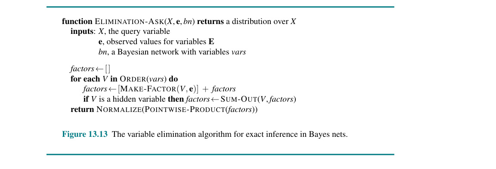
Hình 13.13 function ELIMINATION-ASK($X$, $\textbf{e}$, $bn$) returns một phân phối trên $X$ inputs: $X$, biến truy vấn $\textbf{e}$, các giá trị quan sát cho các biến $\textbf{E}$ $bn$, một mạng Bayes với các biến vars
$factors \leftarrow [ ]$ for each $V$ in ORDER($vars$) do $factors \leftarrow [\text{MAKE-FACTOR}(V, \textbf{e})] + factors$ if $V$ là một biến ẩn then $factors \leftarrow \text{SUM-OUT}(V, factors)$ return NORMALIZE(POINTWISE-PRODUCT($factors$))
Hình 13.13 Thuật toán loại bỏ biến cho suy luận chính xác trong Bayes nets.
Điều này có khả năng hiệu quả hơn nhiều so với việc tính toán nhân tử tích từng điểm $\textbf{h}$ lớn trước rồi mới lấy tổng $X$ ra khỏi đó.
Lưu ý rằng các ma trận không được nhân cho đến khi chúng ta cần lấy tổng để loại một biến ra khỏi tích lũy kế. Tại thời điểm đó, chúng ta chỉ nhân những ma trận nào có chứa biến sẽ bị lấy tổng. Khi đã có các hàm cho phép lấy tích từng điểm và lấy tổng ra, bản thân thuật toán loại bỏ biến có thể được viết khá đơn giản, như trong Hình 13.13.
Thuật toán trong Hình 13.13 bao gồm một hàm chưa xác định ORDER để chọn thứ tự cho các biến. Mỗi lựa chọn thứ tự sẽ mang lại một thuật toán hợp lệ, nhưng các thứ tự khác nhau sẽ khiến các nhân tử trung gian khác nhau được tạo ra trong quá trình tính toán. Ví dụ, trong tính toán được trình bày ở trên, chúng ta đã loại $A$ trước $E$; nếu chúng ta làm ngược lại, tính toán trở thành
P$(B | j, m) = \alpha \textbf{f}_1(B) \times \sum_a \textbf{f}_4(A) \times \textbf{f}_5(A) \times \sum_e \textbf{f}_2(E) \times \textbf{f}_3(A, B, E)$,
trong lúc đó một nhân tử mới $\textbf{f}_6(A, B)$ sẽ được tạo ra.
Nhìn chung, yêu cầu về thời gian và không gian của thuật toán loại bỏ biến bị chi phối bởi kích thước của nhân tử lớn nhất được xây dựng trong quá trình hoạt động của thuật toán. Điều này lại được quyết định bởi thứ tự loại bỏ các biến và cấu trúc của mạng. Việc xác định thứ tự tối ưu hóa ra là một bài toán khó (intractable), nhưng có sẵn một số phương pháp heuristic tốt. Một phương pháp khá hiệu quả là phương pháp tham lam (greedy): loại bỏ bất kỳ biến nào làm giảm thiểu kích thước của nhân tử tiếp theo sẽ được xây dựng.
Hãy xem xét thêm một truy vấn nữa: $\textbf{P}(\text{JohnCalls} | \text{Burglary} = \text{true})$. Như thường lệ (xem Công thức (13.5)), bước đầu tiên là viết ra tổng lồng nhau:
$\textbf{P}(J | b) = \alpha P(b) \sum_e P(e) \sum_a P(a | b, e) \textbf{P}(J | a) \sum_m P(m | a)$.
Đánh giá biểu thức này từ phải sang trái, chúng ta nhận thấy một điều thú vị: $\sum_m P(m | a)$ bằng 1 theo định nghĩa! Do đó, ngay từ đầu không cần phải đưa nó vào; biến $M$ là không liên quan (irrelevant) đối với truy vấn này. Một cách khác để nói điều này là kết quả của truy vấn $\textbf{P}(\text{JohnCalls} | \text{Burglary} = \text{true})$ sẽ không thay đổi nếu chúng ta loại bỏ hoàn toàn $\text{MaryCalls}$ khỏi mạng. Nói chung, chúng ta có thể loại bỏ bất kỳ nút lá nào không phải là biến truy vấn hoặc biến bằng chứng. Sau khi loại bỏ nó, có thể sẽ xuất hiện thêm một số nút lá khác, và những nút này cũng có thể không liên quan. Tiếp tục quá trình này, cuối cùng chúng ta phát hiện ra rằng mọi biến không phải là tổ tiên của một biến truy vấn hoặc một biến bằng chứng đều không liên quan đến truy vấn. Một thuật toán loại bỏ biến do đó có thể loại bỏ tất cả các biến này trước khi đánh giá truy vấn.
Khi được áp dụng cho mạng bảo hiểm thể hiện ở Hình 13.9, thuật toán loại bỏ biến cho thấy sự cải thiện đáng kể so với thuật toán liệt kê ngây thơ. Sử dụng thứ tự topo ngược (reverse topological order) cho các biến, việc suy luận chính xác bằng cách dùng loại bỏ biến nhanh hơn khoảng 1.000 lần so với thuật toán liệt kê.
Độ phức tạp của suy luận chính xác trong Bayes nets phụ thuộc rất lớn vào cấu trúc của mạng. Mạng trộm cắp ở Hình 13.2 thuộc về một họ mạng mà trong đó có nhiều nhất một đường đi vô hướng (nghĩa là bỏ qua hướng của các mũi tên) giữa hai nút bất kỳ trong mạng. Những mạng này được gọi là mạng kết nối đơn (singly connected networks) hoặc polytrees (đa cây), và chúng có một thuộc tính đặc biệt tốt: Độ phức tạp thời gian và không gian của suy luận chính xác trong các polytree là tuyến tính (linear) so với kích thước của mạng. Ở đây, kích thước được định nghĩa là số lượng các mục CPT; nếu số lượng cha của mỗi nút bị giới hạn bởi một hằng số, thì độ phức tạp cũng sẽ tuyến tính theo số lượng nút. Kết quả này đúng với bất kỳ thứ tự nào nhất quán với thứ tự topo của mạng (Bài tập 13.VEEX).
Đối với các mạng kết nối đa (multiply connected networks), chẳng hạn như mạng bảo hiểm trong Hình 13.9, thuật toán loại bỏ biến có thể có độ phức tạp thời gian và không gian theo hàm mũ trong trường hợp xấu nhất, ngay cả khi số lượng cha trên mỗi nút bị giới hạn. Điều này không có gì đáng ngạc nhiên khi người ta xem xét rằng vì nó bao gồm suy luận trong logic mệnh đề như một trường hợp đặc biệt, suy luận trong Bayes nets là NP-khó (NP-hard). Để chứng minh điều này, chúng ta cần tìm ra cách mã hóa một bài toán thỏa mãn tính logic mệnh đề dưới dạng một Bayes net, sao cho việc chạy suy luận trên mạng này cho chúng ta biết liệu các câu mệnh đề ban đầu có thỏa mãn được hay không. (Theo ngôn ngữ của lý thuyết độ phức tạp, chúng ta thu gọn (reduce) các bài toán tính thỏa mãn thành các bài toán suy luận trên Bayes net.) Điều này hóa ra lại khá đơn giản. Hình 13.14 cho thấy cách mã hóa một bài toán 3-SAT cụ thể. Các biến mệnh đề trở thành các biến gốc (root variables) của mạng, mỗi biến có xác suất tiên nghiệm là 0.5. Lớp nút tiếp theo tương ứng với các mệnh đề (clauses), với mỗi biến mệnh đề $C_j$ được kết nối với các biến phù hợp đóng vai trò là nút cha. Phân phối có điều kiện cho một biến mệnh đề là một phép tuyển tất định (deterministic disjunction), có chứa phép phủ định nếu cần, sao cho mỗi biến mệnh đề là đúng khi và chỉ khi phép gán cho các cha của nó thỏa mãn mệnh đề đó. Cuối cùng, $S$ là phép hội (conjunction) của các biến mệnh đề.
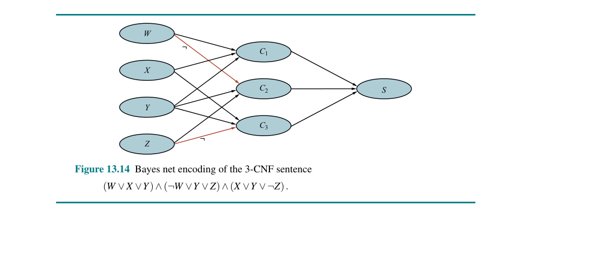
Hình 13.14
mermaid graph LR W(("W")) --> C1(("C1")) W -.-> C2(("C2")) X(("X")) --> C1 X --> C2 X --> C3(("C3")) Y(("Y")) --> C1 Y --> C2 Y --> C3 Z(("Z")) --> C2 Z -.-> C3 C1 --> S(("S")) C2 --> S C3 --> SHình 13.14 Mã hóa dưới dạng Bayes net của câu 3-CNF $(W \lor X \lor Y) \land (\neg W \lor Y \lor Z) \land (X \lor Y \lor \neg Z)$. (Lưu ý: Mũi tên nét đứt đại diện cho các phủ định $\neg$)
Để xác định xem câu gốc có thỏa mãn được hay không, chúng ta đơn giản là đánh giá $P(S = \text{true})$. Nếu câu là có thể thỏa mãn, thì có một phép gán khả dĩ nào đó cho các biến logic làm cho $S$ đúng; trong Bayes net, điều này có nghĩa là có một thế giới khả dĩ với xác suất khác không trong đó các biến gốc có phép gán đó, các biến mệnh đề có giá trị $\text{true}$, và $S$ có giá trị $\text{true}$. Do đó, $P(S = \text{true}) > 0$ cho một câu có thể thỏa mãn. Ngược lại, $P(S = \text{true}) = 0$ cho một câu không thể thỏa mãn: tất cả các thế giới có $S = \text{true}$ đều có xác suất bằng 0. Vậy, chúng ta có thể sử dụng suy luận trên Bayes net để giải quyết các bài toán 3-SAT; từ đó, chúng ta kết luận rằng suy luận trong Bayes net là NP-khó.
Thực tế, chúng ta có thể làm được nhiều hơn thế. Lưu ý rằng xác suất của mỗi phép gán thỏa mãn là $2^{-n}$ cho một bài toán với $n$ biến. Do đó, số lượng các phép gán thỏa mãn là $P(S = \text{true}) / (2^{-n})$. Vì việc tính số lượng các phép gán thỏa mãn cho một bài toán 3-SAT là #P-đầy đủ ("number-P complete"), điều này có nghĩa là suy luận Bayes net là #P-khó — tức là, nó thực sự khó hơn các bài toán NP-đầy đủ.
Có một sự kết nối chặt chẽ giữa độ phức tạp của suy luận Bayes net và độ phức tạp của các bài toán thỏa mãn ràng buộc (CSPs). Như chúng ta đã thảo luận trong Chương 5, độ khó của việc giải một CSP rời rạc liên quan đến việc đồ thị ràng buộc của nó có giống "hình cây" ("treelike") đến mức nào. Các phép đo lường như bề rộng cây (tree width), dùng để giới hạn độ phức tạp của việc giải một CSP, cũng có thể được áp dụng trực tiếp cho các mạng Bayes. Hơn nữa, thuật toán loại bỏ biến có thể được khái quát hóa để giải quyết CSPs cũng như Bayes nets.
Cùng với việc thu gọn các bài toán tính thỏa mãn thành suy luận Bayes net, chúng ta cũng có thể thu gọn suy luận Bayes net thành bài toán tính thỏa mãn, điều này cho phép chúng ta tận dụng cỗ máy mạnh mẽ được phát triển cho việc giải quyết SAT (xem Chương 7). Trong trường hợp này, sự thu gọn này nhằm tạo ra một hình thức giải SAT cụ thể được gọi là đếm mô hình có trọng số (weighted model counting - WMC). Việc đếm mô hình thông thường sẽ đếm số lượng các phép gán thỏa mãn đối với một biểu thức SAT; WMC cộng tổng trọng số của những phép gán thỏa mãn đó — trong đó, trong ứng dụng này, trọng số về cơ bản là tích của các xác suất có điều kiện đối với mỗi phép gán biến khi biết các cha của nó. (Xem Bài tập 13.WMCX để biết thêm chi tiết.) Một phần vì công nghệ giải SAT đã được tối ưu hóa quá tốt cho các ứng dụng quy mô lớn, suy luận Bayes net thông qua WMC cạnh tranh với và đôi khi còn vượt trội so với các thuật toán chính xác khác trên các mạng có bề rộng cây lớn.
Thuật toán loại bỏ biến rất đơn giản và hiệu quả để trả lời các truy vấn riêng lẻ. Tuy nhiên, nếu chúng ta muốn tính xác suất hậu nghiệm cho tất cả các biến trong mạng, thì nó có thể kém hiệu quả hơn. Ví dụ, trong một mạng polytree, người ta sẽ cần đưa ra $O(n)$ truy vấn với mỗi truy vấn tốn $O(n)$ thời gian, tổng cộng là thời gian $O(n^2)$. Bằng cách sử dụng các thuật toán phân cụm (clustering) (còn được gọi là các thuật toán cây kết hợp (join tree)), thời gian này có thể giảm xuống $O(n)$. Do đó, các thuật toán này được sử dụng rộng rãi trong các công cụ Bayes net thương mại.
Ý tưởng cơ bản của phân cụm là nối các nút riêng lẻ của mạng lại với nhau để tạo thành các nút cụm (cluster nodes) sao cho mạng kết quả là một polytree. Ví dụ, mạng kết nối đa thể hiện ở Hình 13.15(a) có thể được chuyển đổi thành một polytree bằng cách kết hợp nút Sprinkler và nút Rain thành một nút cụm gọi là $\text{Sprinkler+Rain}$, như được hiển thị trong Hình 13.15(b). Hai nút Boolean được thay thế bởi một siêu nút (meganode) có bốn giá trị có thể có: $tt, tf, ft$, và $ff$. Siêu nút này chỉ có một nút cha, biến Boolean Cloudy, do đó có hai trường hợp điều kiện hóa. Mặc dù ví dụ này không hiển thị điều đó, nhưng quá trình phân cụm thường tạo ra các siêu nút chia sẻ chung một số biến.
Một khi mạng đã ở dạng polytree, cần có một thuật toán suy luận mục đích đặc biệt, bởi vì các phương pháp suy luận thông thường không thể xử lý các siêu nút mà chia sẻ các biến chung với nhau. Về bản chất, thuật toán này là một dạng truyền ràng buộc (constraint propagation) (xem Chương 5), nơi các ràng buộc đảm bảo rằng các siêu nút lân cận đồng ý về xác suất hậu nghiệm của bất kỳ biến nào mà chúng có chung. Với việc quản lý sổ sách (bookkeeping) cẩn thận, thuật toán này có thể tính xác suất hậu nghiệm cho tất cả các nút không phải bằng chứng trong mạng trong thời gian tuyến tính so với kích thước của mạng đã phân cụm. Tuy nhiên, tính chất NP-khó của bài toán không hề biến mất: nếu một mạng yêu cầu thời gian và không gian hàm mũ với phép loại bỏ biến, thì các CPT trong mạng phân cụm nhất định cũng sẽ lớn theo hàm mũ.
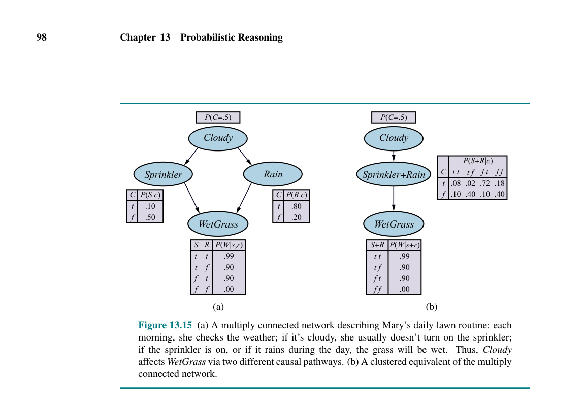
Hình 13.15 ```mermaid graph TD subgraph A [Multiply connected] C1(("Cloudy")) --> S1(("Sprinkler")) C1 --> R1(("Rain")) S1 --> W1(("WetGrass")) R1 --> W1 end
subgraph B [Clustered] C2(("Cloudy")) --> SR(("Sprinkler+Rain")) SR --> W2(("WetGrass")) end``` (a) Một mạng kết nối đa mô tả thói quen tưới cỏ hàng ngày của Mary: mỗi sáng, cô ấy kiểm tra thời tiết; nếu trời nhiều mây, cô ấy thường không bật vòi phun; nếu vòi phun đang bật, hoặc nếu trời mưa trong ngày, cỏ sẽ bị ướt. Do đó, Cloudy ảnh hưởng đến WetGrass qua hai con đường nhân quả khác nhau. (b) Một phiên bản phân cụm tương đương của mạng kết nối đa.
Do sự khó giải quyết của suy luận chính xác trong các mạng lớn, bây giờ chúng ta sẽ xem xét các phương pháp suy luận xấp xỉ. Phần này mô tả các thuật toán lấy mẫu ngẫu nhiên (randomized sampling), còn được gọi là các thuật toán Monte Carlo, giúp cung cấp các câu trả lời xấp xỉ với độ chính xác phụ thuộc vào số lượng mẫu được tạo ra. Chúng hoạt động bằng cách tạo ra các sự kiện ngẫu nhiên dựa trên các xác suất trong mạng Bayes và đếm các câu trả lời khác nhau được tìm thấy trong các sự kiện ngẫu nhiên đó. Với đủ số lượng mẫu, chúng ta có thể tiến tùy ý gần tới việc khôi phục lại phân phối xác suất thực sự — miễn là mạng Bayes không có các phân phối có điều kiện mang tính tất định.
Các thuật toán Monte Carlo, mà luyện kim mô phỏng (simulated annealing - trang 133) là một ví dụ, được sử dụng trong nhiều nhánh của khoa học để ước tính các đại lượng khó có thể tính toán chính xác. Trong phần này, chúng ta quan tâm đến việc lấy mẫu được áp dụng để tính toán các xác suất hậu nghiệm trong mạng Bayes. Chúng tôi mô tả hai họ thuật toán: lấy mẫu trực tiếp (direct sampling) và lấy mẫu chuỗi Markov (Markov chain sampling). Một vài phương pháp khác cho suy luận xấp xỉ được đề cập trong phần ghi chú ở cuối chương.
Thành phần cơ bản trong bất kỳ thuật toán lấy mẫu nào là việc tạo ra các mẫu từ một phân phối xác suất đã biết. Ví dụ, một đồng xu không thiên vị (unbiased coin) có thể được coi là một biến ngẫu nhiên Coin với các giá trị $\langle\text{heads}, \text{tails}\rangle$ (sấp, ngửa) và một phân phối tiên nghiệm P$(\text{Coin}) = \langle 0.5, 0.5 \rangle$. Lấy mẫu từ phân phối này hoàn toàn giống như việc tung đồng xu: với xác suất 0.5 nó sẽ trả về heads, và với xác suất 0.5 nó sẽ trả về tails. Cho trước một nguồn các số ngẫu nhiên $r$ phân phối đều (uniformly distributed) trong khoảng $[0, 1]$, việc lấy mẫu từ bất kỳ phân phối nào trên một biến đơn lẻ, dù là rời rạc hay liên tục, là một vấn đề đơn giản. Việc này được thực hiện bằng cách xây dựng phân phối tích lũy (cumulative distribution) cho biến đó và trả về giá trị đầu tiên có xác suất tích lũy vượt quá $r$ (xem Bài tập 13.PRSA).
Chúng ta bắt đầu với một quá trình lấy mẫu ngẫu nhiên cho một Bayes net mà không có bằng chứng nào được liên kết với nó. Ý tưởng là lấy mẫu lần lượt từng biến, theo thứ tự topo. Phân phối xác suất mà từ đó giá trị được lấy mẫu sẽ được lấy điều kiện theo các giá trị đã được gán cho các cha của biến đó. (Bởi vì chúng ta lấy mẫu theo thứ tự topo, các cha được đảm bảo là đã có giá trị sẵn rồi.) Thuật toán này được hiển thị trong Hình 13.16. Áp dụng nó cho mạng ở Hình 13.15(a) với thứ tự sắp xếp Cloudy, Sprinkler, Rain, WetGrass, chúng ta có thể tạo ra một sự kiện ngẫu nhiên như sau: 1. Lấy mẫu từ P$(\text{Cloudy}) = \langle 0.5, 0.5 \rangle$, giá trị là $\text{true}$. 2. Lấy mẫu từ P$(\text{Sprinkler} | \text{Cloudy} = \text{true}) = \langle 0.1, 0.9 \rangle$, giá trị là $\text{false}$. 3. Lấy mẫu từ P$(\text{Rain} | \text{Cloudy} = \text{true}) = \langle 0.8, 0.2 \rangle$, giá trị là $\text{true}$. 4. Lấy mẫu từ P$(\text{WetGrass} | \text{Sprinkler} = \text{false}, \text{Rain} = \text{true}) = \langle 0.9, 0.1 \rangle$, giá trị là $\text{true}$. Trong trường hợp này, PRIOR-SAMPLE trả về sự kiện $[\text{true}, \text{false}, \text{true}, \text{true}]$.
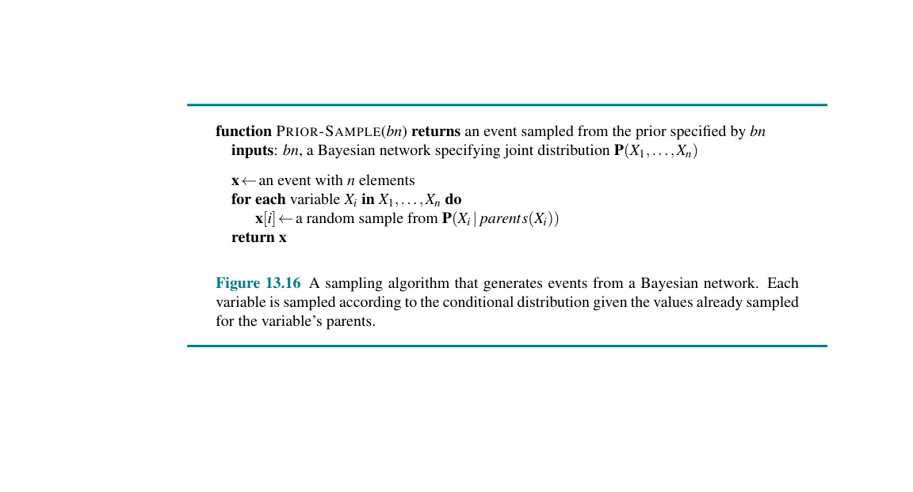
Hình 13.16 function PRIOR-SAMPLE($bn$) returns một sự kiện được lấy mẫu từ phân phối tiên nghiệm được chỉ định bởi $bn$ inputs: $bn$, một mạng Bayes chỉ định phân phối đồng thời $\textbf{P}(X_1, \dots, X_n)$
$\textbf{x} \leftarrow$ một sự kiện có $n$ phần tử for each biến $X_i$ trong $X_1, \dots, X_n$ do $\textbf{x}[i] \leftarrow$ một mẫu ngẫu nhiên từ $\textbf{P}(X_i | \text{parents}(X_i))$ return $\textbf{x}$
Hình 13.16 Thuật toán lấy mẫu tạo ra các sự kiện từ mạng Bayes. Mỗi biến được lấy mẫu theo phân phối có điều kiện khi biết các giá trị đã lấy mẫu cho các cha của biến.
Rất dễ để thấy rằng PRIOR-SAMPLE sinh ra các mẫu từ phân phối đồng thời tiên nghiệm được chỉ định bởi mạng. Đầu tiên, gọi $S_{PS}(x_1, \dots, x_n)$ là xác suất mà một sự kiện cụ thể được tạo ra bởi thuật toán PRIOR-SAMPLE. Chỉ cần nhìn vào quá trình lấy mẫu, chúng ta có $S_{PS}(x_1 \dots x_n) = \prod_{i=1}^n P(x_i | \text{parents}(X_i))$ bởi vì mỗi bước lấy mẫu chỉ phụ thuộc vào các giá trị cha. Biểu thức này trông quen thuộc, bởi vì nó cũng chính là xác suất của sự kiện theo biểu diễn của Bayes net cho phân phối đồng thời, như đã nêu trong Công thức (13.2). Nghĩa là, chúng ta có $S_{PS}(x_1 \dots x_n) = P(x_1 \dots x_n)$. Sự thật đơn giản này giúp dễ dàng trả lời các câu hỏi bằng cách sử dụng các mẫu.
Trong bất kỳ thuật toán lấy mẫu nào, các câu trả lời được tính toán bằng cách đếm các mẫu thực tế được tạo ra. Giả sử có $N$ tổng số mẫu được tạo ra bởi thuật toán PRIOR-SAMPLE, và để $N_{PS}(x_1, \dots, x_n)$ là số lần sự kiện cụ thể $x_1, \dots, x_n$ xảy ra trong tập các mẫu. Chúng ta kỳ vọng con số này, dưới dạng một tỷ lệ (fraction) của tổng số, sẽ hội tụ ở giới hạn về giá trị kỳ vọng của nó theo xác suất lấy mẫu: $\lim_{N \rightarrow \infty} \frac{N_{PS}(x_1, \dots, x_n)}{N} = S_{PS}(x_1, \dots, x_n) = P(x_1, \dots, x_n)$. (13.6)
Ví dụ, hãy xem xét sự kiện được tạo ra ở trên: $[\text{true}, \text{false}, \text{true}, \text{true}]$. Xác suất lấy mẫu cho sự kiện này là $S_{PS}(\text{true}, \text{false}, \text{true}, \text{true}) = 0.5 \times 0.9 \times 0.8 \times 0.9 = 0.324$. Do đó, trong giới hạn khi $N$ lớn, chúng ta kỳ vọng 32.4% các mẫu sẽ là sự kiện này.
Bất cứ khi nào chúng ta sử dụng dấu bằng xấp xỉ ("$\approx$") trong những phần sau, chúng ta ngụ ý nó chính xác theo nghĩa này — rằng xác suất ước lượng trở nên chính xác ở giới hạn của mẫu lớn. Ước lượng như vậy được gọi là nhất quán (consistent). Ví dụ, người ta có thể tạo ra một ước lượng nhất quán cho xác suất của bất kỳ sự kiện được chỉ định một phần nào $x_1, \dots, x_m$, với $m \le n$, như sau: $P(x_1, \dots, x_m) \approx N_{PS}(x_1, \dots, x_m)/N$. (13.7) Nghĩa là, xác suất của sự kiện có thể được ước lượng dưới dạng tỷ lệ của tất cả các sự kiện đầy đủ do quá trình lấy mẫu tạo ra mà khớp (match) với sự kiện được chỉ định một phần đó. Chúng ta sẽ sử dụng $\hat{P}$ (phát âm là "P-hat") để biểu thị một xác suất được ước lượng. Vậy, nếu chúng ta tạo ra 1.000 mẫu từ mạng vòi phun, và 511 trong số đó có $\text{Rain} = \text{true}$, thì xác suất mưa ước lượng là $\hat{P}(\text{Rain} = \text{true}) = 0.511$.
Lấy mẫu từ chối (Rejection sampling) là một phương pháp tổng quát để tạo ra các mẫu từ một phân phối khó lấy mẫu thông qua việc sử dụng một phân phối dễ lấy mẫu hơn. Trong hình thức đơn giản nhất, nó có thể được sử dụng để tính toán các xác suất có điều kiện — tức là, để xác định $\textbf{P}(X | \textbf{e})$. Thuật toán REJECTION-SAMPLING được hiển thị trong Hình 13.17. Đầu tiên, nó tạo ra các mẫu từ phân phối tiên nghiệm được chỉ định bởi mạng. Sau đó, nó từ chối tất cả những mẫu không khớp với bằng chứng $\textbf{e}$. Cuối cùng, ước lượng $\hat{\textbf{P}}(X = x | \textbf{e})$ thu được bằng cách đếm xem tần suất $X = x$ xảy ra bao nhiêu lần trong các mẫu còn lại.
Cho $\hat{\textbf{P}}(X | \textbf{e})$ là phân phối ước lượng mà thuật toán trả về; phân phối này được tính bằng cách chuẩn hóa $\textbf{N}{PS}(X, \textbf{e})$, là một vectơ chứa số lượng đếm của các mẫu cho từng giá trị của $X$ trong trường hợp mẫu đó đồng ý với bằng chứng $\textbf{e}$: $\hat{\textbf{P}}(X | \textbf{e}) = \alpha \textbf{N}{PS}(X, \textbf{e}) = \frac{\textbf{N}{PS}(X, \textbf{e})}{N{PS}(\textbf{e})}$.
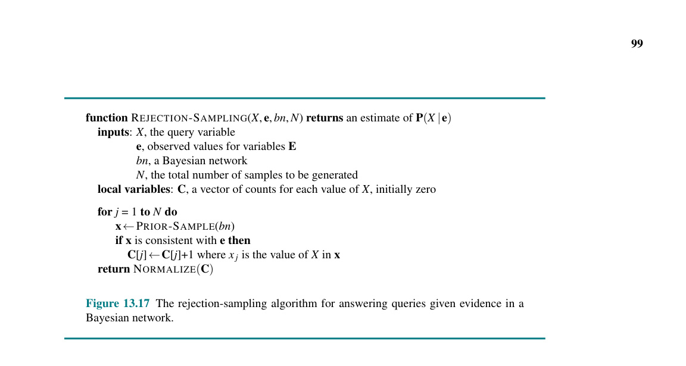
Hình 13.17 function REJECTION-SAMPLING($X$, $\textbf{e}$, $bn$, $N$) returns một ước lượng của P$(X | \textbf{e})$ inputs: $X$, biến truy vấn $\textbf{e}$, các giá trị quan sát cho các biến $\textbf{E}$ $bn$, một mạng Bayes $N$, tổng số mẫu cần tạo local variables: $\textbf{C}$, một vectơ các số đếm cho mỗi giá trị của $X$, ban đầu là 0
for $j = 1$ to $N$ do $\textbf{x} \leftarrow$ PRIOR-SAMPLE($bn$) if $\textbf{x}$ nhất quán với $\textbf{e}$ then $\textbf{C}[j] \leftarrow \textbf{C}[j] + 1$ với $x_j$ là giá trị của $X$ trong $\textbf{x}$ return NORMALIZE($\textbf{C}$)
Hình 13.17 Thuật toán lấy mẫu từ chối để trả lời các truy vấn khi biết bằng chứng trong một mạng Bayes.
Từ Công thức (13.7), điều này trở thành $\hat{\textbf{P}}(X | \textbf{e}) \approx \frac{\textbf{P}(X, \textbf{e})}{P(\textbf{e})} = \textbf{P}(X | \textbf{e})$. Nghĩa là, lấy mẫu từ chối tạo ra một ước lượng nhất quán của xác suất thực.
Tiếp tục với ví dụ từ Hình 13.15(a), giả sử chúng ta muốn ước lượng $\textbf{P}(\text{Rain} | \text{Sprinkler} = \text{true})$, sử dụng 100 mẫu. Trong số 100 mẫu mà chúng ta tạo ra, giả sử rằng có 73 mẫu có $\text{Sprinkler} = \text{false}$ và bị từ chối, trong khi có 27 mẫu có $\text{Sprinkler} = \text{true}$; trong 27 mẫu này, 8 có $\text{Rain} = \text{true}$ và 19 có $\text{Rain} = \text{false}$. Do đó, $\textbf{P}(\text{Rain} | \text{Sprinkler} = \text{true}) \approx \text{NORMALIZE}(\langle 8, 19 \rangle) = \langle 0.296, 0.704 \rangle$. Câu trả lời thực sự là $\langle 0.3, 0.7 \rangle$. Khi thu thập được nhiều mẫu hơn, ước lượng sẽ hội tụ về câu trả lời thực sự. Độ lệch chuẩn của sai số trong mỗi xác suất sẽ tỷ lệ với $1/\sqrt{n}$, trong đó $n$ là số lượng mẫu được sử dụng trong ước lượng.
Bây giờ chúng ta biết rằng lấy mẫu từ chối sẽ hội tụ về đáp án đúng, câu hỏi tiếp theo là: điều đó xảy ra nhanh đến mức nào? Cụ thể hơn, cần bao nhiêu mẫu trước khi chúng ta biết rằng các ước lượng thu được là gần với các câu trả lời đúng với xác suất cao? Trong khi độ phức tạp của các thuật toán chính xác phụ thuộc phần lớn vào cấu trúc topo của mạng — cấu trúc cây thì dễ, các mạng kết nối dày đặc thì khó — thì độ phức tạp của lấy mẫu từ chối lại phụ thuộc chủ yếu vào tỷ lệ các mẫu được chấp nhận. Tỷ lệ này bằng chính xác với xác suất tiên nghiệm của bằng chứng, $P(\textbf{e})$. Thật không may, đối với các bài toán phức tạp với nhiều biến bằng chứng, tỷ lệ này sẽ nhỏ đến mức biến mất (vanishingly small). Khi áp dụng cho phiên bản rời rạc của mạng bảo hiểm xe trong Hình 13.9, tỷ lệ các mẫu nhất quán với một trường hợp bằng chứng điển hình được lấy mẫu từ chính mạng đó thường nằm trong khoảng một phần ngàn đến một phần mười ngàn. Sự hội tụ là vô cùng chậm (xem Hình 13.19 bên dưới).
Chúng ta kỳ vọng tỷ lệ các mẫu nhất quán với bằng chứng $\textbf{e}$ sẽ giảm theo hàm mũ khi số lượng các biến bằng chứng tăng lên, do đó quy trình này trở nên không thể sử dụng cho các bài toán phức tạp. Nó cũng gặp khó khăn với các biến bằng chứng có giá trị liên tục, bởi vì xác suất tạo ra một mẫu nhất quán với bằng chứng như vậy bằng không (nếu nó thực sự có giá trị liên tục) hoặc cực kỳ nhỏ (nếu nó chỉ là một số dấu phẩy động với độ chính xác hữu hạn). Lấy mẫu từ chối rất giống với việc ước lượng các xác suất có điều kiện trong thế giới thực. Ví dụ, để ước lượng xác suất có điều kiện rằng có người nào sống sót hay không sau khi một tiểu hành tinh đường kính 1km đâm vào Trái đất, người ta có thể đơn giản đếm số lần có con người sống sót sau các sự cố tiểu hành tinh đường kính 1km đâm vào Trái đất, bỏ qua tất cả những ngày không xảy ra sự kiện như vậy. Rõ ràng, việc này có thể mất một thời gian rất dài, và đó là điểm yếu của lấy mẫu từ chối.
Kỹ thuật thống kê tổng quát của lấy mẫu tầm quan trọng (importance sampling) nhằm mô phỏng ảnh hưởng của việc lấy mẫu từ một phân phối $P$ thông qua việc sử dụng các mẫu từ một phân phối $Q$ khác. Chúng ta đảm bảo rằng các câu trả lời đúng ở giới hạn bằng cách áp dụng một hệ số hiệu chỉnh (correction factor) $P(\textbf{x}) / Q(\textbf{x})$, còn được gọi là một trọng số (weight), cho từng mẫu $\textbf{x}$ khi đếm các mẫu.
Lý do sử dụng lấy mẫu tầm quan trọng trong Bayes nets rất đơn giản: chúng ta muốn lấy mẫu từ phân phối hậu nghiệm thực sự được điều kiện hóa trên tất cả các bằng chứng, nhưng thường điều này quá khó;$^6$ vì vậy thay vào đó, chúng ta lấy mẫu từ một phân phối dễ dàng và áp dụng các hiệu chỉnh cần thiết.
Nếu chúng ta có thể lấy mẫu trực tiếp từ $\textbf{P}(\textbf{z} | \textbf{e})$, chúng ta có thể xây dựng các ước lượng như thế này: $\hat{\textbf{P}}(\textbf{z} | \textbf{e}) = \frac{N_P(\textbf{z})}{N} \approx \textbf{P}(\textbf{z} | \textbf{e})$ trong đó $N_P(\textbf{z})$ là số mẫu có $\textbf{Z} = \textbf{z}$ khi lấy mẫu từ $P$. Bây giờ giả sử thay vì thế chúng ta lấy mẫu từ $Q(\textbf{z})$. Ước lượng trong trường hợp này bao gồm các hệ số hiệu chỉnh: $\hat{\textbf{P}}(\textbf{z} | \textbf{e}) = \frac{N_Q(\textbf{z})}{N} \frac{P(\textbf{z} | \textbf{e})}{Q(\textbf{z})} \approx Q(\textbf{z}) \frac{P(\textbf{z} | \textbf{e})}{Q(\textbf{z})} = P(\textbf{z} | \textbf{e})$.
Do đó, ước lượng sẽ hội tụ về giá trị đúng bất kể phân phối lấy mẫu $Q$ nào được sử dụng. (Yêu cầu kỹ thuật duy nhất là $Q(\textbf{z})$ không được bằng không đối với bất kỳ $\textbf{z}$ nào mà $P(\textbf{z} | \textbf{e})$ khác không.) Nói cách khác, hệ số hiệu chỉnh bù đắp cho việc lấy mẫu thừa hoặc lấy mẫu thiếu. Đối với việc chọn $Q$, chúng ta muốn một phân phối dễ lấy mẫu và càng gần với phân phối hậu nghiệm thực tế $\textbf{P}(\textbf{z} | \textbf{e})$ càng tốt. Cách tiếp cận phổ biến nhất được gọi là đánh trọng số hợp lý (likelihood weighting). Như thể hiện trong hàm WEIGHTED-SAMPLE trong Hình 13.18, thuật toán cố định các giá trị cho các biến bằng chứng $\textbf{E}$ và lấy mẫu cho tất cả các biến không phải bằng chứng theo thứ tự topo, mỗi biến được lấy điều kiện dựa trên các cha của nó. Điều này đảm bảo rằng mỗi sự kiện được tạo ra đều nhất quán với bằng chứng.
$^6$ Nếu nó dễ dàng, thì chúng ta đã có thể xấp xỉ xác suất mong muốn đến một độ chính xác tùy ý bằng số lượng mẫu đa thức. Người ta có thể chứng minh rằng không có sơ đồ xấp xỉ thời gian đa thức nào như vậy có thể tồn tại.
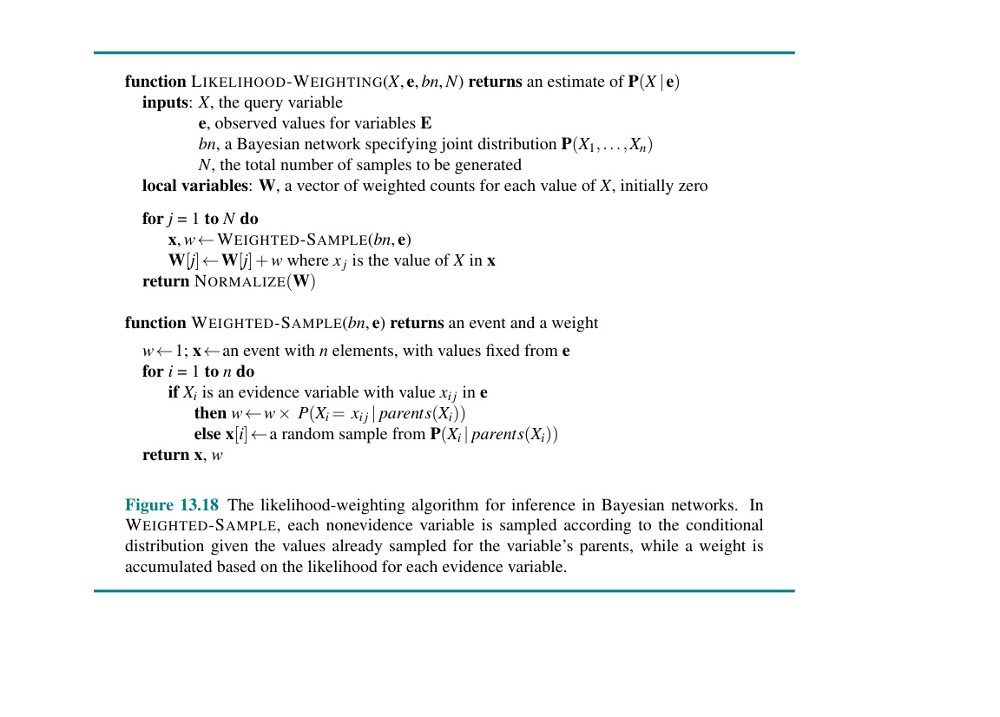
Hình 13.18 function LIKELIHOOD-WEIGHTING($X$, $\textbf{e}$, $bn$, $N$) returns một ước lượng của P$(X | \textbf{e})$ inputs: $X$, biến truy vấn $\textbf{e}$, các giá trị quan sát cho các biến $\textbf{E}$ $bn$, một mạng Bayes chỉ định phân phối đồng thời $\textbf{P}(X_1, \dots, X_n)$ $N$, tổng số mẫu cần tạo local variables: $\textbf{W}$, một vectơ các số đếm có trọng số cho mỗi giá trị của $X$, ban đầu là 0
for $j = 1$ to $N$ do $\textbf{x}, w \leftarrow$ WEIGHTED-SAMPLE($bn$, $\textbf{e}$) $\textbf{W}[j] \leftarrow \textbf{W}[j] + w$ với $x_j$ là giá trị của $X$ trong $\textbf{x}$ return NORMALIZE($\textbf{W}$)
function WEIGHTED-SAMPLE($bn$, $\textbf{e}$) returns một sự kiện và một trọng số $w \leftarrow 1$; $\textbf{x} \leftarrow$ một sự kiện với $n$ phần tử, với các giá trị được cố định từ $\textbf{e}$ for $i = 1$ to $n$ do if $X_i$ là một biến bằng chứng có giá trị $x_{ij}$ trong $\textbf{e}$ then $w \leftarrow w \times P(X_i = x_{ij} | \text{parents}(X_i))$ else $\textbf{x}[i] \leftarrow$ một mẫu ngẫu nhiên từ $\textbf{P}(X_i | \text{parents}(X_i))$ return $\textbf{x}, w$
Hình 13.18 Thuật toán đánh trọng số hợp lý cho suy luận trong mạng Bayes. Trong WEIGHTED-SAMPLE, mỗi biến không phải bằng chứng được lấy mẫu theo phân phối có điều kiện khi biết các giá trị đã được lấy mẫu của các cha nó, trong khi một trọng số được tích lũy dựa trên hợp lý (likelihood) cho mỗi biến bằng chứng.
Gọi phân phối lấy mẫu được sinh ra bởi thuật toán này là $Q_{WS}$. Nếu các biến không phải bằng chứng là $\textbf{Z} = {Z_1, \dots, Z_l}$, thì chúng ta có $Q_{WS}(\textbf{z}) = \prod_{i=1}^l P(z_i | \text{parents}(Z_i))$ (13.8) bởi vì mỗi biến được lấy mẫu với điều kiện là các cha của nó. Để hoàn thành thuật toán, chúng ta cần biết cách tính trọng số cho mỗi mẫu được sinh ra từ $Q_{WS}$. Theo cơ chế chung cho lấy mẫu tầm quan trọng, trọng số sẽ là $w(\textbf{z}) = P(\textbf{z} | \textbf{e}) / Q_{WS}(\textbf{z}) = \alpha P(\textbf{z}, \textbf{e}) / Q_{WS}(\textbf{z})$ trong đó hệ số chuẩn hóa $\alpha = 1 / P(\textbf{e})$ là giống nhau cho tất cả các mẫu. Bây giờ, $\textbf{z}$ và $\textbf{e}$ cùng bao phủ tất cả các biến trong mạng Bayes, vì vậy $P(\textbf{z}, \textbf{e})$ chỉ là tích của tất cả các xác suất có điều kiện; và chúng ta có thể viết điều này thành tích của các xác suất có điều kiện cho các biến không phải bằng chứng nhân với tích của các xác suất có điều kiện cho các biến bằng chứng: $w(\textbf{z}) = \alpha \frac{P(\textbf{z}, \textbf{e})}{Q_{WS}(\textbf{z})} = \alpha \frac{\prod_{i=1}^l P(z_i | \text{parents}(Z_i)) \prod_{i=1}^m P(e_i | \text{parents}(E_i))}{\prod_{i=1}^l P(z_i | \text{parents}(Z_i))}$ $= \alpha \prod_{i=1}^m P(e_i | \text{parents}(E_i))$. (13.9)
Do đó trọng số chính là tích của các xác suất có điều kiện cho các biến bằng chứng nếu biết các cha của chúng. (Xác suất của bằng chứng thường được gọi là các hợp lý (likelihoods), do đó có tên gọi là đánh trọng số hợp lý.) Tính toán trọng số được triển khai tăng dần trong WEIGHTED-SAMPLE, nhân với xác suất có điều kiện mỗi khi gặp một biến bằng chứng. Phép chuẩn hóa được thực hiện ở cuối cùng trước khi trả về kết quả truy vấn.
Hãy áp dụng thuật toán vào mạng được hiển thị trong Hình 13.15(a), với truy vấn $\textbf{P}(\text{Rain} | \text{Cloudy} = \text{true}, \text{WetGrass} = \text{true})$ và với thứ tự sắp xếp Cloudy, Sprinkler, Rain, WetGrass. (Bất kỳ thứ tự topo nào cũng được.) Quá trình diễn ra như sau: Đầu tiên, trọng số $w$ được đặt là 1.0. Sau đó một sự kiện được tạo ra: 1. Cloudy là một biến bằng chứng có giá trị $\text{true}$. Do đó, chúng ta đặt $w \leftarrow w \times P(\text{Cloudy} = \text{true}) = 0.5$. 2. Sprinkler không phải là một biến bằng chứng, do đó lấy mẫu từ $\textbf{P}(\text{Sprinkler} | \text{Cloudy} = \text{true}) = \langle 0.1, 0.9 \rangle$; giả sử bước này trả về $\text{false}$. 3. Rain không phải là một biến bằng chứng, do đó lấy mẫu từ $\textbf{P}(\text{Rain} | \text{Cloudy} = \text{true}) = \langle 0.8, 0.2 \rangle$; giả sử bước này trả về $\text{true}$. 4. WetGrass là một biến bằng chứng có giá trị $\text{true}$. Do đó, chúng ta đặt $w \leftarrow w \times P(\text{WetGrass} = \text{true} | \text{Sprinkler} = \text{false}, \text{Rain} = \text{true}) = 0.5 \times 0.9 = 0.45$. Ở đây WEIGHTED-SAMPLE trả về sự kiện $[\text{true}, \text{false}, \text{true}, \text{true}]$ với trọng số 0.45, và điều này được tính nhẩm vào cho trường hợp $\text{Rain} = \text{true}$.
Lưu ý rằng $\text{Parents}(Z_i)$ có thể bao gồm cả biến không phải bằng chứng và biến bằng chứng. Khác với phân phối tiên nghiệm $P(\textbf{z})$, phân phối $Q_{WS}$ có chú ý đôi chút đến bằng chứng: các giá trị được lấy mẫu cho mỗi $Z_i$ sẽ bị ảnh hưởng bởi bằng chứng nằm trong số các tổ tiên của $Z_i$. Ví dụ, khi lấy mẫu Sprinkler, thuật toán chú ý đến bằng chứng $\text{Cloudy} = \text{true}$ ở biến cha của nó. Mặt khác, $Q_{WS}$ chú ý đến bằng chứng ít hơn so với phân phối hậu nghiệm thực sự $P(\textbf{z} | \textbf{e})$, bởi vì các giá trị được lấy mẫu cho mỗi $Z_i$ bỏ qua bằng chứng nằm trong số những biến không phải là tổ tiên của $Z_i$. Ví dụ, khi lấy mẫu Sprinkler và Rain, thuật toán bỏ qua bằng chứng ở biến con $\text{WetGrass} = \text{true}$; điều này có nghĩa là nó sẽ tạo ra nhiều mẫu có $\text{Sprinkler} = \text{false}$ và $\text{Rain} = \text{false}$ mặc dù thực tế là bằng chứng đã loại trừ trường hợp này. Những mẫu đó sẽ có trọng số bằng 0.
Vì đánh trọng số hợp lý sử dụng tất cả các mẫu được tạo ra, nó có thể hiệu quả hơn nhiều so với lấy mẫu từ chối. Tuy nhiên, nó sẽ bị suy giảm hiệu suất khi số lượng biến bằng chứng tăng lên. Điều này là do hầu hết các mẫu sẽ có trọng số rất thấp và do đó ước lượng có trọng số sẽ bị chi phối bởi một tỷ lệ nhỏ các mẫu ngẫu nhiên khớp khá tốt với bằng chứng. Vấn đề càng trầm trọng hơn nếu các biến bằng chứng xuất hiện ở "hạ lưu" ("downstream") — tức là, ở cuối thứ tự biến — bởi vì khi đó các biến không phải bằng chứng sẽ không có bằng chứng nào ở cha và tổ tiên của chúng để định hướng cho việc tạo ra các mẫu. Điều này có nghĩa là các mẫu sẽ chỉ là những "ảo giác" (hallucinations) — những mô phỏng mang rất ít sự tương đồng với thực tế mà bằng chứng đã gợi ý.
Khi áp dụng cho phiên bản rời rạc của mạng bảo hiểm ô tô trong Hình 13.9, đánh trọng số hợp lý hiệu quả hơn đáng kể so với lấy mẫu từ chối (xem Hình 13.19). Mạng bảo hiểm là một trường hợp tương đối nhẹ nhàng đối với đánh trọng số hợp lý vì phần lớn bằng chứng nằm ở "thượng lưu" ("upstream") và các biến truy vấn là các nút lá của mạng.
Các thuật toán Markov chain Monte Carlo (MCMC) hoạt động khác với lấy mẫu từ chối và đánh trọng số hợp lý. Thay vì tạo ra mỗi mẫu từ đầu, các thuật toán MCMC tạo ra một mẫu bằng cách tạo ra một sự thay đổi ngẫu nhiên vào mẫu trước đó. Hãy coi một thuật toán MCMC như đang ở một trạng thái hiện tại (current state) cụ thể, chỉ định một giá trị cho mọi biến, và tạo ra một trạng thái tiếp theo (next state) bằng cách thực hiện những thay đổi ngẫu nhiên đối với trạng thái hiện tại.
Thuật ngữ chuỗi Markov (Markov chain) đề cập đến một quá trình ngẫu nhiên tạo ra một chuỗi các trạng thái. (Các chuỗi Markov cũng xuất hiện nổi bật trong Chương 14 và 16; thuật toán luyện kim mô phỏng trong Chương 4 và thuật toán WALKSAT trong Chương 7 cũng là những thành viên của họ MCMC.) Chúng ta bắt đầu bằng cách mô tả một dạng cụ thể của MCMC được gọi là lấy mẫu Gibbs (Gibbs sampling), đặc biệt phù hợp với các mạng Bayes. Sau đó chúng ta mô tả thuật toán tổng quát hơn là Metropolis–Hastings, cho phép linh hoạt hơn nhiều trong việc tạo ra các mẫu.
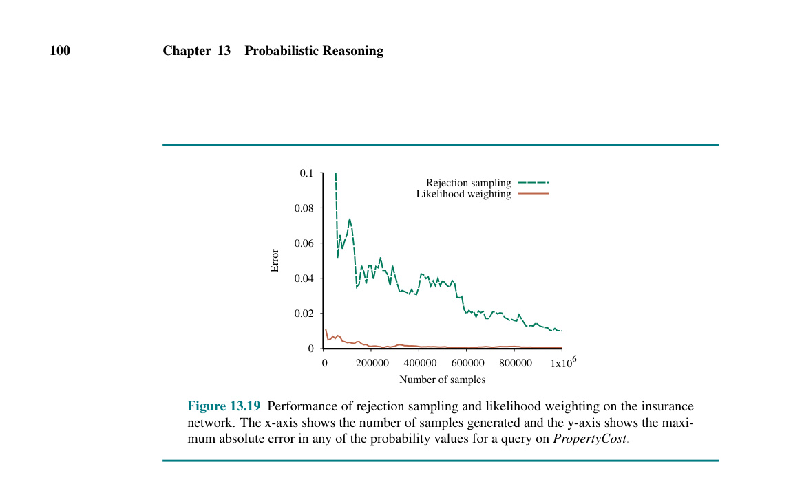
Hình 13.19 (Đồ thị biểu diễn sai số theo số lượng mẫu của hai phương pháp Rejection sampling và Likelihood weighting). Hình 13.19 Hiệu suất của lấy mẫu từ chối và đánh trọng số hợp lý trên mạng bảo hiểm. Trục x hiển thị số lượng mẫu được tạo ra và trục y hiển thị sai số tuyệt đối lớn nhất trong bất kỳ giá trị xác suất nào cho một truy vấn về biến PropertyCost.
Thuật toán lấy mẫu Gibbs cho mạng Bayes bắt đầu với một trạng thái tùy ý (với các biến bằng chứng được cố định ở các giá trị quan sát của chúng) và tạo ra trạng thái tiếp theo bằng cách lấy mẫu ngẫu nhiên một giá trị cho một trong các biến không phải bằng chứng $X_i$. Hãy nhớ lại từ trang 437 rằng $X_i$ là độc lập với tất cả các biến khác nếu biết Markov blanket của nó (các cha của nó, các con của nó, và các cha khác của con nó); do đó, lấy mẫu Gibbs cho $X_i$ có nghĩa là lấy mẫu được điều kiện hóa trên các giá trị hiện tại của các biến trong Markov blanket của nó. Thuật toán lang thang ngẫu nhiên xung quanh không gian trạng thái — không gian của các phép gán hoàn chỉnh khả dĩ — lật (flipping) từng biến một tại một thời điểm, nhưng giữ nguyên các biến bằng chứng. Toàn bộ thuật toán được trình bày trong Hình 13.20.
Xem xét truy vấn $\textbf{P}(\text{Rain} | \text{Sprinkler} = \text{true}, \text{WetGrass} = \text{true})$ cho mạng trong Hình 13.15(a). Các biến bằng chứng Sprinkler và WetGrass được cố định ở các giá trị quan sát của chúng (cả hai là $\text{true}$), và các biến không phải bằng chứng Cloudy và Rain được khởi tạo ngẫu nhiên, ví dụ, tương ứng là $\text{true}$ và $\text{false}$. Do đó, trạng thái ban đầu là $[\text{true}, \textbf{true}, \text{false}, \textbf{true}]$, nơi chúng ta đã bôi đậm các giá trị bằng chứng cố định. Bây giờ các biến không phải bằng chứng $Z_i$ được lấy mẫu lặp đi lặp lại theo một thứ tự ngẫu nhiên nào đó dựa trên một phân phối xác suất $\rho(i)$ cho việc chọn các biến. Ví dụ: 1. Cloudy được chọn và sau đó được lấy mẫu, nếu biết các giá trị hiện tại của Markov blanket của nó: trong trường hợp này, chúng ta lấy mẫu từ $\textbf{P}(\text{Cloudy} | \text{Sprinkler} = \text{true}, \text{Rain} = \text{false})$. Giả sử kết quả là $\text{Cloudy} = \text{false}$. Khi đó trạng thái hiện tại mới là $[\text{false}, \textbf{true}, \text{false}, \textbf{true}]$. 2. Rain được chọn và sau đó được lấy mẫu, nếu biết các giá trị hiện tại của Markov blanket của nó: trong trường hợp này, chúng ta lấy mẫu từ $\textbf{P}(\text{Rain} | \text{Cloudy} = \text{false}, \text{Sprinkler} = \text{true}, \text{WetGrass} = \text{true})$. Giả sử việc này mang lại $\text{Rain} = \text{true}$. Trạng thái hiện tại mới là $[\text{false}, \textbf{true}, \text{true}, \textbf{true}]$.
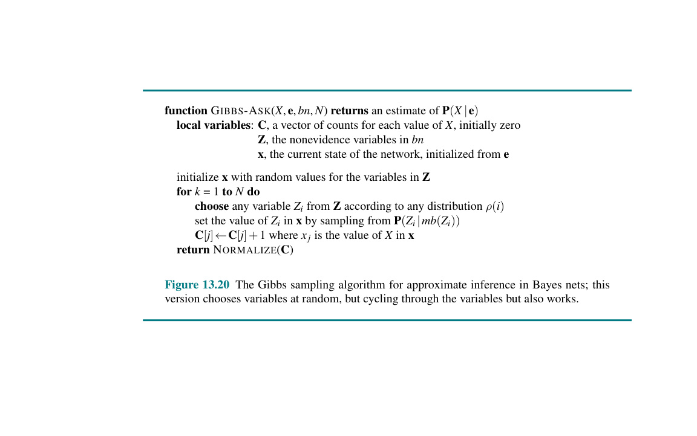
Hình 13.20 function GIBBS-ASK($X$, $\textbf{e}$, $bn$, $N$) returns một ước lượng của P$(X | \textbf{e})$ local variables: $\textbf{C}$, một vectơ các số đếm cho mỗi giá trị của $X$, ban đầu là 0 $\textbf{Z}$, các biến không phải bằng chứng trong $bn$ $\textbf{x}$, trạng thái hiện tại của mạng, được khởi tạo từ $\textbf{e}$
khởi tạo $\textbf{x}$ với các giá trị ngẫu nhiên cho các biến trong $\textbf{Z}$ for $k = 1$ to $N$ do chọn một biến bất kỳ $Z_i$ từ $\textbf{Z}$ theo một phân phối $\rho(i)$ nào đó đặt giá trị của $Z_i$ trong $\textbf{x}$ bằng cách lấy mẫu từ $\textbf{P}(Z_i | mb(Z_i))$ $\textbf{C}[j] \leftarrow \textbf{C}[j] + 1$ với $x_j$ là giá trị của $X$ trong $\textbf{x}$ return NORMALIZE($\textbf{C}$)
Hình 13.20 Thuật toán lấy mẫu Gibbs cho suy luận xấp xỉ trong các mạng Bayes; phiên bản này chọn ngẫu nhiên các biến, nhưng việc duyệt vòng quanh các biến cũng hoạt động tốt.
Chi tiết duy nhất còn lại liên quan đến phương pháp tính phân phối Markov blanket $\textbf{P}(X_i | mb(X_i))$, trong đó $mb(X_i)$ biểu thị các giá trị của các biến nằm trong Markov blanket của $X_i$, $MB(X_i)$. May mắn thay, điều này không liên quan đến bất kỳ phép suy luận phức tạp nào. Như được chỉ ra trong Bài tập 13.MARB, phân phối được cho bởi
$P(x_i | mb(X_i)) = \alpha P(x_i | \text{parents}(X_i)) \prod_{Y_j \in \text{Children}(X_i)} P(y_j | \text{parents}(Y_j))$. (13.10)
Nói cách khác, đối với mỗi giá trị $x_i$, xác suất được tính bằng cách nhân các xác suất từ các CPT của $X_i$ và các con của nó. Ví dụ, trong bước lấy mẫu đầu tiên được trình bày ở trên, chúng ta đã lấy mẫu từ $\textbf{P}(\text{Cloudy} | \text{Sprinkler} = \text{true}, \text{Rain} = \text{false})$. Theo Công thức (13.10), và viết tắt tên các biến, chúng ta có $P(c | s, \neg r) = \alpha P(c)P(s|c)P(\neg r|c) = \alpha 0.5 \cdot 0.1 \cdot 0.2$ $P(\neg c | s, \neg r) = \alpha P(\neg c)P(s|\neg c)P(\neg r|\neg c) = \alpha 0.5 \cdot 0.5 \cdot 0.8$, vì vậy phân phối lấy mẫu là $\alpha \langle 0.001, 0.020 \rangle \approx \langle 0.048, 0.952 \rangle$.
Hình 13.21(a) hiển thị chuỗi Markov hoàn chỉnh cho trường hợp mà các biến được chọn đều nhau, tức là $\rho(\text{Cloudy}) = \rho(\text{Rain}) = 0.5$. Thuật toán chỉ đơn giản là đi lang thang trong đồ thị này, men theo các liên kết với các xác suất đã nêu. Mỗi trạng thái được thăm trong quá trình này là một mẫu đóng góp vào ước lượng cho biến truy vấn Rain. Nếu quá trình thăm 20 trạng thái mà Rain là $\text{true}$ và 60 trạng thái mà Rain là $\text{false}$, thì câu trả lời cho truy vấn là $\text{NORMALIZE}(\langle 20, 60 \rangle) = \langle 0.25, 0.75 \rangle$.
Chúng ta đã nói rằng lấy mẫu Gibbs hoạt động bằng cách đi lang thang ngẫu nhiên trong không gian trạng thái để tạo ra các mẫu. Để giải thích tại sao lấy mẫu Gibbs hoạt động đúng — tức là tại sao các ước lượng của nó hội tụ về các giá trị đúng ở giới hạn — chúng ta sẽ cần một vài phân tích cẩn thận. (Phần này hơi mang tính toán học và có thể bỏ qua trong lần đọc đầu tiên.)
Chúng ta bắt đầu với một số khái niệm cơ bản để phân tích các chuỗi Markov nói chung. Bất kỳ chuỗi nào như vậy đều được định nghĩa bởi trạng thái ban đầu của nó và nhân chuyển đổi (transition kernel) $k(\textbf{x} \rightarrow \textbf{x}')$ — xác suất của một sự chuyển đổi sang trạng thái $\textbf{x}'$ khi bắt đầu từ trạng thái $\textbf{x}$. Bây giờ giả sử rằng chúng ta chạy chuỗi Markov trong $t$ bước, và gọi $\pi_t(\textbf{x})$ là xác suất để hệ thống ở trạng thái $\textbf{x}$ tại thời điểm $t$. Tương tự, gọi $\pi_{t+1}(\textbf{x}')$ là xác suất ở trạng thái $\textbf{x}'$ tại thời điểm $t + 1$. Với $\pi_t(\textbf{x})$, chúng ta có thể tính $\pi_{t+1}(\textbf{x}')$ bằng cách tính tổng, đối với tất cả các trạng thái $\textbf{x}$ mà hệ thống có thể ở đó tại thời điểm $t$, của tích giữa xác suất đang ở trạng thái $\textbf{x}$ và xác suất thực hiện chuyển đổi sang $\textbf{x}'$: $\pi_{t+1}(\textbf{x}') = \sum_{\textbf{x}} \pi_t(\textbf{x})k(\textbf{x} \rightarrow \textbf{x}')$.
Chúng ta nói rằng chuỗi đã đạt tới phân phối dừng (stationary distribution) của nó nếu $\pi_t = \pi_{t+1}$. Hãy gọi phân phối dừng này là $\pi$; phương trình định nghĩa của nó do đó là $\pi(\textbf{x}') = \sum_{\textbf{x}} \pi(\textbf{x})k(\textbf{x} \rightarrow \textbf{x}')$ đối với mọi $\textbf{x}'$. (13.11)
Miễn là nhân chuyển đổi $k$ mang tính ergodic — nghĩa là, mọi trạng thái đều có thể đến được từ mọi trạng thái khác và không có chu kỳ hoàn toàn lặp lại — thì chỉ có đúng một phân phối $\pi$ thỏa mãn phương trình này cho bất kỳ $k$ nào.
Công thức (13.11) có thể được đọc như là nói rằng "dòng chảy ra" ("outflow") dự kiến từ mỗi trạng thái (tức là "dân số" hiện tại của nó) bằng với "dòng chảy vào" ("inflow") dự kiến từ tất cả các trạng thái. Một cách hiển nhiên để thỏa mãn mối quan hệ này là nếu dòng chảy dự kiến giữa bất kỳ cặp trạng thái nào cũng bằng nhau theo cả hai hướng; nghĩa là, $\pi(\textbf{x})k(\textbf{x} \rightarrow \textbf{x}') = \pi(\textbf{x}')k(\textbf{x}' \rightarrow \textbf{x})$ đối với mọi $\textbf{x}, \textbf{x}'$. (13.12) Khi các phương trình này thỏa mãn, chúng ta nói rằng $k(\textbf{x} \rightarrow \textbf{x}')$ nằm trong sự cân bằng chi tiết (detailed balance) với $\pi(\textbf{x})$.
Bây giờ chúng ta sẽ cho thấy rằng lấy mẫu Gibbs trả về các ước lượng nhất quán cho các xác suất hậu nghiệm. Khẳng định cơ bản khá rõ ràng: phân phối dừng của quá trình lấy mẫu Gibbs chính là phân phối hậu nghiệm cho các biến không phải bằng chứng được điều kiện hóa trên bằng chứng. Đặc tính đáng chú ý này bắt nguồn từ cách thức cụ thể mà quá trình lấy mẫu Gibbs di chuyển từ trạng thái này sang trạng thái khác.
... (phần phân tích toán học chứng minh Gibbs sampling tuân theo detailed balance) ... Việc chứng minh có thể được suy ra từ tính chất của nhân chuyển đổi $k(\textbf{x} \rightarrow \textbf{x}')$ của lấy mẫu Gibbs, đảm bảo rằng nó tuân theo trạng thái cân bằng chi tiết với phân phối hậu nghiệm thực sự P$(\textbf{x} | \textbf{e})$.
Đầu tiên là tin tốt: mỗi bước lấy mẫu Gibbs liên quan đến việc tính toán phân phối Markov blanket cho biến $X_i$ được chọn, đòi hỏi một số lượng phép nhân tỷ lệ thuận với số lượng các nút con của $X_i$ và kích thước dải giá trị của $X_i$. Điều này quan trọng vì nó có nghĩa là khối lượng công việc cần thiết để tạo ra mỗi mẫu độc lập với kích thước của toàn bộ mạng.
Bây giờ là tin không hẳn là xấu: độ phức tạp của lấy mẫu Gibbs khó phân tích hơn nhiều so với lấy mẫu từ chối và đánh trọng số hợp lý. Điều đầu tiên cần chú ý là lấy mẫu Gibbs, khác với đánh trọng số hợp lý, có chú ý đến bằng chứng "hạ lưu" (downstream evidence). Thông tin lan truyền từ các nút bằng chứng theo mọi hướng: đầu tiên, bất kỳ hàng xóm nào của các nút bằng chứng sẽ lấy mẫu các giá trị phản ánh bằng chứng ở các nút đó; sau đó là hàng xóm của các hàng xóm, v.v. Do đó, chúng ta kỳ vọng lấy mẫu Gibbs vượt trội hơn so với đánh trọng số hợp lý khi bằng chứng chủ yếu ở hạ lưu; và thực tế, điều này được chứng minh trong Hình 13.22.
Tốc độ hội tụ của lấy mẫu Gibbs — tốc độ trộn (mixing rate) của chuỗi Markov do thuật toán định nghĩa — phụ thuộc mạnh mẽ vào các thuộc tính định lượng của các phân phối có điều kiện trong mạng. Vấn đề có thể xảy ra khi phân phối tiến gần đến trạng thái tất định (xác suất là 0 hoặc 1), làm cho chuỗi Markov mất tính ergodic hoặc phải mất thời gian rất dài để "trộn" (mix) tốt giữa các vùng khác nhau của không gian trạng thái. Có nhiều phương pháp cải tiến để MCMC trộn nhanh hơn, ví dụ như lấy mẫu khối (block sampling), hoặc chuyển sang thuật toán phức tạp hơn.
Phương pháp lấy mẫu Metropolis–Hastings hay MH có lẽ là thuật toán MCMC được áp dụng rộng rãi nhất. Giống như lấy mẫu Gibbs, MH được thiết kế để tạo ra các mẫu $\textbf{x}$ (cuối cùng) tuân theo các xác suất mục tiêu $\pi(\textbf{x})$; trong trường hợp suy luận ở mạng Bayes, chúng ta muốn $\pi(\textbf{x}) = P(\textbf{x} | \textbf{e})$. MH có hai giai đoạn trong mỗi vòng lặp của quá trình lấy mẫu: 1. Lấy mẫu một trạng thái mới $\textbf{x}'$ từ một phân phối đề xuất (proposal distribution) $q(\textbf{x}' | \textbf{x})$, dựa trên trạng thái hiện tại $\textbf{x}$. 2. Chấp nhận hoặc từ chối $\textbf{x}'$ một cách xác suất theo xác suất chấp nhận (acceptance probability) $a(\textbf{x}' | \textbf{x}) = \min \left( 1, \frac{\pi(\textbf{x}')q(\textbf{x} | \textbf{x}')}{\pi(\textbf{x})q(\textbf{x}' | \textbf{x})} \right)$. Nếu đề xuất bị từ chối, trạng thái vẫn giữ nguyên là $\textbf{x}$.
Nhân chuyển đổi cho MH bao gồm quy trình hai bước này. Điểm đáng chú ý về MH là sự hội tụ đến phân phối dừng chính xác được đảm bảo đối với bất kỳ phân phối đề xuất nào, miễn là nhân chuyển đổi kết quả là ergodic. Điều này đạt được nhờ cách xác định xác suất chấp nhận $a(\textbf{x}' | \textbf{x})$ để luôn thỏa mãn phương trình cân bằng chi tiết.
Các thuật toán lấy mẫu trong Hình 13.17, 13.18, và 13.20 chia sẻ một thuộc tính chung: chúng hoạt động trên một mạng Bayes được biểu diễn dưới dạng một cấu trúc dữ liệu. Vấn đề với cách tiếp cận này là các thao tác cần thiết để truy cập cấu trúc dữ liệu — ví dụ để tìm các cha của một nút — bị lặp lại hàng nghìn hoặc hàng triệu lần khi thuật toán lấy mẫu chạy, và tất cả những tính toán này là hoàn toàn không cần thiết.
Cấu trúc của mạng và các xác suất có điều kiện vẫn cố định trong suốt quá trình tính toán, do đó có cơ hội để biên dịch (compile) mạng thành một đoạn mã (code) suy luận đặc thù cho mô hình đó, đoạn mã này chỉ thực hiện các phép tính suy luận cần thiết. Nếu chúng ta biên dịch mạng, chúng ta có được đoạn mã lấy mẫu đặc thù cho mô hình. Đoạn mã tuy không đẹp mắt — thông thường nó sẽ lớn tương đương với kích thước của chính Bayes net — nhưng nó lại cực kỳ hiệu quả. So với GIBBS-ASK, mã đã biên dịch thường sẽ nhanh hơn từ 2–3 bậc độ lớn. Nó có thể thực hiện hàng chục triệu bước lấy mẫu mỗi giây trên một máy tính xách tay thông thường, và tốc độ của nó chỉ bị giới hạn chủ yếu bởi chi phí của việc tạo ra các số ngẫu nhiên.
Chúng ta đã thảo luận về một số ưu điểm của việc giữ cho thứ tự nút trong Bayes nets tương thích với hướng của mối quan hệ nhân quả. Cụ thể, chúng ta đã lưu ý đến sự dễ dàng trong việc đánh giá các xác suất có điều kiện nếu thứ tự đó được duy trì, cũng như sự nhỏ gọn của cấu trúc mạng kết quả. Tuy nhiên, chúng ta cũng lưu ý rằng, về nguyên tắc, bất kỳ thứ tự nút nào cũng cho phép xây dựng một cách nhất quán mạng để biểu diễn hàm phân phối đồng thời. Điều này đã được chứng minh trong Hình 13.3, nơi việc thay đổi thứ tự nút tạo ra những mạng rậm rạp hơn và kém tự nhiên hơn nhiều so với mạng ban đầu trong Hình 13.2 nhưng tuy thế vẫn cho phép chúng ta biểu diễn cùng một phân phối trên tất cả các biến.
Phần này mô tả các mạng nhân quả (causal networks), một lớp bị giới hạn của mạng Bayes cấm tất cả các thứ tự trừ những thứ tự tương thích về mặt nhân quả. Chúng ta sẽ khám phá cách xây dựng các mạng như vậy, lợi ích thu được từ cấu trúc đó, và cách tận dụng lợi thế này trong các nhiệm vụ ra quyết định.
Hãy xem xét một mạng Bayes đơn giản nhất có thể tưởng tượng được, gồm một mũi tên duy nhất, $\text{Fire} \rightarrow \text{Smoke}$. Mạng này cho chúng ta biết rằng các biến $\text{Fire}$ và $\text{Smoke}$ có thể phụ thuộc vào nhau, vì vậy người ta cần phải chỉ định xác suất tiên nghiệm $P(\text{Fire})$ và xác suất có điều kiện $P(\text{Smoke} | \text{Fire})$ để xác định phân phối đồng thời $P(\text{Fire}, \text{Smoke})$. Tuy nhiên, phân phối này có thể được biểu diễn tốt không kém bằng mũi tên ngược lại $\text{Fire} \leftarrow \text{Smoke}$, sử dụng $P(\text{Smoke})$ và $P(\text{Fire} | \text{Smoke})$ phù hợp được tính từ định lý Bayes. Ý tưởng cho rằng hai mạng này là tương đương, do đó truyền đạt cùng một thông tin, gây ra sự khó chịu và thậm chí là sự phản kháng đối với hầu hết mọi người. Làm sao chúng có thể truyền đạt cùng một thông tin khi chúng ta biết rằng Lửa gây ra Khói chứ không phải ngược lại?
Nói cách khác, chúng ta biết từ kinh nghiệm và hiểu biết khoa học của mình rằng việc dọn sạch khói sẽ không dập tắt được lửa và dập tắt lửa sẽ làm hết khói. Do đó, chúng ta kỳ vọng sẽ biểu diễn sự bất đối xứng này thông qua hướng của mũi tên giữa chúng. Nhưng nếu việc đảo ngược mũi tên chỉ làm cho mọi thứ tương đương nhau, làm sao chúng ta có thể hy vọng biểu diễn thông tin quan trọng này một cách hình thức?
Các mạng Bayes nhân quả (Causal Bayesian networks), đôi khi được gọi là Biểu đồ nhân quả (Causal Diagrams), được nghĩ ra để cho phép chúng ta biểu diễn các sự bất đối xứng nhân quả và tận dụng các sự bất đối xứng đó hướng tới việc lập luận với thông tin nhân quả. Thay vì hỏi một chuyên gia xem Smoke và Fire có phụ thuộc xác suất hay không, như chúng ta làm trong các mạng Bayes thông thường, giờ chúng ta hỏi cái nào phản ứng với cái nào, Smoke phản ứng với Fire hay Fire phản ứng với Smoke? Quyết định về hướng mũi tên bằng những xem xét vượt xa sự phụ thuộc xác suất và viện dẫn một loại phán đoán hoàn toàn khác. Việc này được cụ thể hóa thông qua khái niệm "gán" ("assignment"), tương tự như toán tử gán trong các ngôn ngữ lập trình. Giá trị $x_i$ của mỗi biến $X_i$ được xác định bởi một phương trình cấu trúc (structural equation) $x_i = f_i(\text{OtherVariables})$, và một mũi tên $X_j \rightarrow X_i$ được vẽ ra khi và chỉ khi $X_j$ là một trong những đối số của hàm $f_i$. Phương trình này mô tả một cơ chế ổn định trong tự nhiên, luôn không thay đổi (invariant) đối với các phép đo và những thay đổi cục bộ trong môi trường.
Ví dụ, để biểu diễn một vòi phun bị hỏng, chúng ta đơn giản xóa tất cả các liên kết chiếu vào nút Sprinkler. Sự ổn định cục bộ này đặc biệt quan trọng để biểu diễn các hành động (actions) hoặc các sự can thiệp (interventions), chủ đề thảo luận tiếp theo của chúng ta.
Theo ngữ nghĩa tiêu chuẩn của Bayes nets, phân phối đồng thời của năm biến trong hệ thống vòi phun được cho bởi: $P(c, r, s, w, g) = P(c) P(r|c) P(s|c) P(w|r, s) P(g|w)$ (13.14) Như một hệ phương trình cấu trúc, mô hình trông như thế này: $C = f_C(U_C)$ $R = f_R(C, U_R)$ $S = f_S(C, U_S)$ (13.15) $W = f_W(R, S, U_W)$ $G = f_G(W, U_G)$ trong đó các biến $U$ đại diện cho các biến không được mô hình hóa (unmodeled variables), hay còn gọi là sai số hoặc sự xáo trộn, gây nhiễu loạn cho mối quan hệ chức năng giữa mỗi biến và các cha của nó. Nếu tất cả các biến $U$ là độc lập với nhau, phân phối đồng thời có thể được biểu diễn chính xác bằng các phương trình cấu trúc. Tuy nhiên, hệ phương trình cấu trúc còn cho chúng ta nhiều hơn thế: nó cho phép chúng ta dự đoán các sự can thiệp (interventions) sẽ ảnh hưởng như thế nào đến hoạt động của hệ thống và do đó là các hệ quả quan sát được của những can thiệp đó.
Ví dụ, giả sử chúng ta bật vòi phun (turn the sprinkler on) — nghĩa là, chúng ta (những người không thuộc quá trình nhân quả được mô tả bởi mô hình) can thiệp để áp đặt điều kiện $\text{Sprinkler} = \text{true}$. Trong ký hiệu của phép tính do (do-calculus), phần then chốt của lý thuyết mạng nhân quả, điều này được viết là $do(\text{Sprinkler} = \text{true})$. Chúng ta xóa phương trình $S = f_S(C, U_S)$ và thay thế nó bằng $S = \text{true}$.
Từ các phương trình này, chúng ta thu được phân phối đồng thời mới cho các biến còn lại với điều kiện là $do(\text{Sprinkler} = \text{true})$: $P(c, r, w, g | do(S=\text{true})) = P(c) P(r|c) P(w|r, s=\text{true}) P(g|w)$ (13.17) Điều này tương ứng với một mạng "bị cắt xén" ("mutilated") nơi liên kết từ Cloudy đến Sprinkler bị loại bỏ. Lưu ý sự khác biệt giữa việc lấy điều kiện dựa trên hành động $do(\text{Sprinkler} = \text{true})$ và lấy điều kiện dựa trên quan sát $\text{Sprinkler} = \text{true}$. Việc can thiệp phá vỡ liên kết nhân quả bình thường giữa thời tiết và vòi phun, ngăn chặn bất kỳ luồng ảnh hưởng nào chảy ngược từ Sprinkler lên Cloudy.
Một cách tiếp cận tương tự có thể được thực hiện để phân tích tác động của việc thiết lập biến $X_j$ thành một giá trị $x_{jk}$ bất kỳ trong một mạng nhân quả tổng quát. Phương trình điều chỉnh (adjustment formula) cho thấy $P(X_i = x_i | do(X_j = x_{jk})) = \sum_{\text{parents}(X_j)} P(x_i | x_{jk}, \text{parents}(X_j))P(\text{parents}(X_j))$. (13.20)
Khả năng dự đoán tác động của bất kỳ sự can thiệp nào là một kết quả đáng chú ý, nhưng nó đòi hỏi kiến thức chính xác về các phân phối có điều kiện cần thiết trong mô hình. Trong nhiều tình huống thực tế, tuy nhiên, điều này là quá sức. Chẳng hạn, chúng ta biết rằng "yếu tố di truyền" đóng một vai trò trong bệnh béo phì, nhưng chúng ta không biết những gen nào đóng vai trò hoặc bản chất chính xác của tác động của chúng.
Ví dụ, chúng ta muốn dự đoán tác động của việc bật vòi phun đối với một biến ở hạ lưu như GreenerGrass, nhưng công thức điều chỉnh (Công thức 13.20) phải tính đến không chỉ tuyến đường trực tiếp từ Sprinkler, mà còn cả con đường "cửa sau" thông qua Cloudy và Rain. Nếu chúng ta biết giá trị của Rain, con đường cửa sau này sẽ bị chặn lại. Do đó có thể viết một công thức điều chỉnh điều kiện hóa trên Rain thay vì Cloudy: $P(g | do(S=\text{true})) = \sum_r P(g | S=\text{true}, r)P(r)$ (13.21)
Nói chung, nếu chúng ta muốn tìm tác động của $do(X_j = x_{jk})$ lên một biến $X_i$, tiêu chuẩn cửa sau (back-door criterion) cho phép chúng ta viết một công thức điều chỉnh có điều kiện dựa trên bất kỳ tập hợp các biến $\textbf{Z}$ nào chặn đường cửa sau đó lại. (Đây là ứng dụng trực tiếp của khái niệm d-tách biệt.)
Tiêu chuẩn cửa sau là khối xây dựng cơ bản cho lý thuyết lập luận nhân quả, cho phép chúng ta lập luận chống lại giáo điều thống kê hàng thế kỷ qua khẳng định rằng chỉ có thử nghiệm đối chứng ngẫu nhiên (randomized controlled trial) mới có thể cung cấp thông tin nhân quả.
Chương này đã mô tả mạng Bayes (Bayesian networks), một biểu diễn được phát triển tốt cho tri thức không chắc chắn. * Mạng Bayes cung cấp một cách ngắn gọn để biểu diễn các mối quan hệ độc lập có điều kiện. Nó chỉ định một phân phối xác suất đồng thời qua các biến của nó, thường nhỏ hơn theo hàm mũ so với phân phối đồng thời liệt kê rõ ràng. * Suy luận trong mạng Bayes (tính phân phối xác suất cho các biến truy vấn khi biết bằng chứng) có thể thực hiện chính xác bằng thuật toán loại bỏ biến (variable elimination), hoặc xấp xỉ bằng các kỹ thuật lấy mẫu như đánh trọng số hợp lý (likelihood weighting) và Markov chain Monte Carlo. * Trong khi Bayes nets nắm bắt các ảnh hưởng xác suất, mạng nhân quả (causal networks) nắm bắt các mối quan hệ nguyên nhân - kết quả và cho phép dự đoán tác động của các sự can thiệp.
Việc sử dụng mạng lưới để biểu diễn thông tin xác suất bắt đầu từ những năm đầu thế kỷ 20 với nghiên cứu của Sewall Wright. Judea Pearl (1985) đặt thuật ngữ "mạng Bayes" và cuốn sách của ông (Pearl, 1988) đã đặt nền móng rộng lớn cho cách tiếp cận xác suất đối với AI. Lấy mẫu Gibbs (Geman & Geman, 1984) và Metropolis-Hastings (Metropolis và cộng sự, 1953) là những phương pháp MCMC quan trọng. Lý thuyết suy luận nhân quả vượt ra ngoài các thử nghiệm đối chứng ngẫu nhiên được đề xuất bởi Rubin (1974) và Robins (1986), và được Judea Pearl phát triển thành một lý thuyết nhân quả có cấu trúc hoàn chỉnh dựa trên mạng nhân quả (Pearl, 2000). Mạng Bayes đã được áp dụng rộng rãi trong y tế, kỹ thuật, sinh học tin học, và vô số hệ thống chẩn đoán. Mặc dù logic mờ (fuzzy logic) hay lý thuyết Dempster-Shafer từng là các lựa chọn thay thế trong AI thập niên 70-80 để xử lý tính bất định, phương pháp tiếp cận xác suất bằng mạng Bayes đã chứng tỏ sự vững chắc toán học và hiệu quả của nó và trở thành phương pháp chủ đạo trong AI hiện đại.